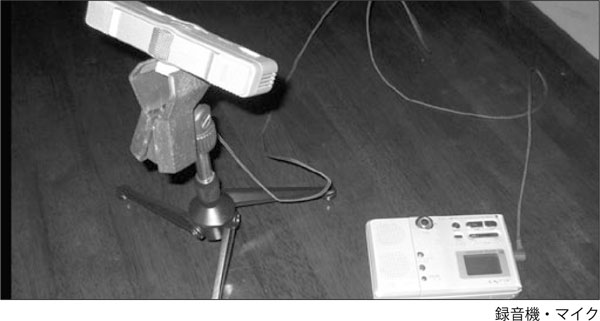

| 前田式韓国語単語整理術 | |
| 前田 真彦 | |
| アルク (2009) | |
参照項目から元の箇所に戻るには、お使いのビューワーの仕様に従ってください。または一旦目次を表示し、戻りたい箇所の近くの見出しをタップして戻ってください。
もっと韓国語学習を楽しむために
韓国語の語彙学習には秘密があった
여러분 안녕하십니까? 前田真彦と申します。私は韓国語の中上級の学習指導に10年以上かかわってきました。現場での経験を活かして身に付けた「韓国語の語彙学習の秘伝」を公開しようと思います。
その前に、まず簡単に自己紹介をしておきます。
私は10年間中級をさまよいました。そして上級への壁を突破して、韓国語能力試験6級と通訳ガイド（通訳案内士）試験に合格し、建国ランゲージセンター（成人対象）で「通訳翻訳演習コース」を立ち上げました。現在では受講生が増えて、基礎と応用の2クラスに分けて授業をしています。
この本は私自身が10年間中級レベルをさまよったこと、そしてそこから脱出した自身の経験、さらにはその後10年間通訳翻訳クラスを指導してきた経験、これら実際の経験を基に編み出した方法です。留学はしていませんし、語学の才能があるわけでもありません。韓国語の勉強を始めたのが20歳です。ごく普通の一学習者としてやってきました。ですから、かえってみなさんに参考にしていただけるのではないかと思っています。
本書で公開する「韓国語語彙学習の秘伝」は2つです。
1 潜在韓国語能力を最大限に活かした整理術
2 楽しく続けるための単語帳作成術
この本は、どこからでも何度でもぱらぱらめくって「つまみ読み」をして下さい。「勉強」という言葉は、そもそも韓国語学習には合わないのかもしれません。そう、「楽しむ」。あなたの韓国語学習ライフを楽しんでください。この本は、そのための工夫に満ち満ちています。受身の勉強ではなく、自分で作っていく積極的な楽しい勉強へ！ あなたの韓国語学習ライフが変わります！
本書は『韓国語ジャーナル』14号～23号に連載した『前田式韓単整理術』を書き改めたものです。
2009年5月 前田真彦
第1部
楽しい韓国語学習へ転換する技術
第1部 楽しい韓国語学習へ転換する技術
つらい暗記よ、さようなら。楽しい発見に満ちた暗記を
外国語を学ぶときにはどうしても学校での英語学習の影響を受けてしまいます。しかし、韓国語の学習は、まったく違ったアプローチが可能です。日本語と韓国語は大変よく似ていますから、その重なり具合やずれ具合に着目すれば記憶しやすくなるのです。
英語は日本語とあまりに違いすぎるので、すべて新しいこととして勉強しなければなりません。それに対し韓国語は、日本語話者にとっては簡単な部分があります。たとえば日本語の漢字音をそのまま韓国語音に置き換えて発音すればよい漢字語がその代表的な例です。漢字語はそのようなものが大多数を占めます。一方、「夫」のことを남편〈男便〉と言ったり、手紙のことを편지〈便紙〉と言ったり、日本語とは違う漢字語が存在します。これらはそのまま覚える努力が必要です。つまり、使用頻度という指標ではなく、日本語との共通点や違いによる指標があるのです。慣用句や四字熟語も同じです。日本語と全く同じものは同じものとして覚えられるし、日本語と違うものは、その違いだけ意識すればよいのです。
一方、日本語と文字は同じでも使われ方が違う漢字語、四字熟語、慣用句、外来語があります。こういうものにこそ、努力を傾けないといけないと言えます。そこには「ヘー、韓国ではこう言うのか」という驚きや発見があります。たとえば「バネ」のことを韓国語では용수철と言いますが、これを漢字で書けば〈龍髭鐵〉となり、印象に残る単語となります。こういう驚きを大事にしたいと思います。
このように漢字語は、日本語と韓国語で共通する部分がたくさんあるわけですから、みなさんはすでに、韓国語の潜在能力を持っているといえるのです。アメリカ人が韓国語を学ぶときの労力と比べ物にならないほどの少ない労力で韓国語を学ぶことができます。この、みなさんがすでに持っている「韓国語潜在能力」をもっと活用しないともったいないです。この韓国語潜在能力を活かせば、もっと楽に語彙を増やせるのです。
上の図は日本語・韓国語・英語の重なり具合をイメージで示したものです。日本語と韓国語は語順、単語など重なる部分が多いのです。日本語と韓国語の重なっている部分には、さほど力を注がなくてもよいのです。1対1の対応で「これはこう」と覚えればおしまいの部分です。ずれている部分を意識して覚えないといけません。
今までの単語集は、使用頻度を中心にしたものがほとんどです。しかしこの本では、日本語との親疎──日本人学習者にとって親しみが持てるかどうか──によって暗記の労力の割き方に軽重を付けようとしています。みなさんの韓国語潜在能力をフルに活かした作りになっています。
その他にも、多義語によって整理する、擬声語・擬態語を自分の行動として捕らえなおす、カタカナ語を日本語との響きの違いによって分類する、はたまた逆に日本語と全く同じ慣用表現をまとめて、安心して使えるようにする......、韓国語潜在能力を最大限活かしながら覚えやすくなるようにさまざまな切り口で分類・整理し、記憶しやすいヒントを提供しています。
継続するための技術
この本を手に取っているみなさんの多くは社会人だと思います。受験を想定した英語学習のようにレベルに沿ってバランスよく実力を高めていくのも一つの方法ですが、自分の興味のある分野をどんどん勉強していけばよいのが韓国語学習の楽しさです。
韓国語学習に、学校教育のような堅苦しい枠は必要ありません。中学3年生が覚えなければならない英単語はここまで、というような枠にとらわれる必要がないのが韓国語学習です。覚えたいものを覚えればよいのです。まずは自分の興味関心にしたがってどんどん単語を増やしていけばよいと思います。
「このドラマのセリフは韓国語で全部理解したい！」「○○の歌詞を全部覚えたい」「この分野に関しては私が第1人者」という興味本位の学習が可能なのが、生涯学習としての韓国語学習の最大の魅力です。
この単語集には、「これだけ覚えれば大丈夫」という枠を作っていません。好きな分野はどんどん専門用語まで覚えていけばよいのです。
学校での英語の勉強は、好きでも嫌いでもやらされたものでしたが、韓国語は自ら進んでする自主的・積極的な学習です。
学習途上で出くわした単語を書留めて、暗記するための単語集も大事でしょう。しかし、与えられた単語を覚えるのではなく、自分で獲得する・自分で収集する学習の方がもっと楽しいものです。
お気に入りのノートに単語が増えていく喜びを味わおうではありませんか。
押し付けられた勉強でない、自分で獲得していく喜びを！
本書では単語を整理する方法をみなさんに示しました。
さあ、みなさん、この例にならって、どうぞ自分で単語帳を作ってください。
私は今まで、Ｂ6ノート、ルーズリーフ、システム手帳と3通りの方法で単語帳を作ってきました。それぞれ一長一短があります。みなさんは自分のスタイルに合った方法を取ればよいと思います。具体的に説明しましょう。
1．Ｂ6ノート
私が一番長い間使ってきたノートです。コクヨ＜ノ-638B＞という商品です。これを10冊は使いました。持ち運びやすい点と例文を書き込むのに小さすぎないというのが気に入りました。このノートによって韓国語能力試験6級と通訳ガイド（通訳案内士）試験に合格し、飛躍につながりました。
［A］は韓国の新聞を切り抜いて貼り付けたものです。新聞の下の広告欄に出ていた四字熟語です。こういうふうに張っておくと、特に覚えようと意識しなくても頭に残ります。
［B］はしおりです。刺繍糸を背表紙のところに2本セロテープで貼り付けただけですが、しおりがあると便利です。ちょっとした加工で愛着がぐんと増します。
［C］は付箋です。付箋もあちこちに貼っています。これはノートを取り出せない、歩いている途中、満員電車の中などで、ポケットに付箋を入れておき、メモしたものです。それをそのまま貼り付けたもの。私は一番スタンダードな7.6×2.5センチのクリーム色のものに統一しています。そして一日1ブロック使い切るぐらいたくさん書きます。スーツやジャンパーのポケット、カバンなどあちこちに入れておいて、いざというとき、ぱっと出せるようにしておきます。後でメモしようと思うともうだめです。その単語はどこかに消えてなくなります。すぐに付箋にメモします。それを後でノートにそのまま貼り付けます。書き写す必要はありません。そのまま貼り付けて終わり。なお、付箋の粘着力が弱くてはずれる心配があれば、付箋の一方の端をセロテープで付けると安心です。
後できれいに整理、などと思うと長続きしません。気がついたらメモ。日付つき。時にはわざとレシートや映画のチケットなどを貼り付けて、覚えやすい変化を付けておきます。こうすることで生活のにおいのする単語帳になります。単語の羅列の中にところどころ生活のにおいが入っている方が断然覚えやすくなります。
ノートには例文を書き込みましょう。辞書の用例でもかまいません。またイラストなどがあるとなおよいと思います。
「付けまつげ」は인조 속눈썹（人造まつげ）、「二重まぶた」쌍꺼풀、「白目」흰자、「瞳」눈동자［눈똥자］、「血眼」혈안、単語にまつわることわざなど、こうしてイラストで描いておくと、記憶に残りやすいです。
2．ルーズリーフ、システム手帳
ルーズリーフやシステム手帳は、並べ替えができて便利です。項目別に書き足していくならこの方式をとるとよいと思います。本書のように分野別に分類するときはこちらが便利です。
真ん中を折り、左に日本語、右に韓国語を書きます（韓日の場合は逆）。1ページに1項目です。「多義語」「カタカナ語」「ことわざ」などの項目でページを作っておいて、どんどん書き足していくのです。記入は4色ボールペンでカラフルに書き込むと記憶を定着させるときに重要な刺激になります。動詞は赤、形容詞は青などルールを決めると面倒になり続きません。その時の気分で色を変えるだけで十分です。どこに行くときも、この単語帳を持ち歩いて、持ち歩けないときは付箋をポケットに入れ、気になる単語や新たに覚えた表現をメモし、家に帰って単語帳に貼り付けて終わり。書き写しなどしているとそのうちに面倒になって長続きしません。
私はしばらく持ち運びに便利なように小型のＢ5版のルーズリーフを利用していましたが、スケジュール管理ができるシステム手帳に一元管理すればより便利ではないかと考えて、今はシステム手帳を活用しています。分厚くなったら、保管用のファイルに移します。
携帯電話とこのシステム手帳さえあれば、大丈夫。勉強も、スケジュールもこの1冊で──これが今の私のスタイルです。
結局、ルーズリーフとシステム手帳は、携帯性を重視するのか、一元管理を重視するのか、それだけの違いです。
携帯性も、分類整理、はたまたスケジュール管理までも全部一手に引き受けることができそうなのは、バイブルサイズのシステム手帳か、とも思っています。機会があれば試してみようと思いますが、今のＡ5サイズのシステム手帳でもすぐに分厚くなるので、バイブルサイズのシステム手帳だとすぐにパンパンに膨れ上がりそうで、いまだに乗り換えられていません。
4色ボールペン、蛍光マーカーペンは必須です。私は4色ボールペンと付箋は箱で購入し、ふんだんに使っています。どの上着を着ても胸に4色ボールペン、ポケットに付箋が入っています。どのカバンにも4色ボールペンと付箋が入っています。4色ボールペンは赤インクばかりが減りがちですが、赤の替え芯を数本文房具店で買っておくと、安心して、赤もどんどん使えます。
筆ペンも便利です。私は中学校で国語を教えていますが、筆ペンは生徒全員に買わせています。漢字の練習は普通のノートに筆ペンで大きめに書かせると覚えやすいのです。ぜひみなさんも韓国語で試しにやってみてください。ペンテルの筆ペン（「ペンテル筆」という商品名になっています）の中字がオススメです。他にも朱墨や薄墨のペンテル筆もオススメです。
自分のコンセプトにぴったりあったスタイルを選んでください。いずれにしても共通しているのは、次の事柄です。
＜持続できる単語帳作りの技術＞
技術［1］
自分で使える例文を作って書き込む
単語だけではなく、辞書の用例を写すだけでもよい。
技術［2］
発見・気づいたことも書き込む
日付、ちょっとした生活メモ（天気や食べたものなど）、これによって記憶に残りやすくなる。
技術［3］
カラフルに
色を使うだけでも記憶の助けになる。4色ボールペン、蛍光ペン、筆ペン。
技術［4］
付箋を活用する
ノートを持ち運べないときには付箋でメモ。後はノートに貼り付けるだけの簡単整理。
ノートやシステム手帳は、できるだけかわいいもの、長く愛着を持って使えるものを選びましょう。私のシステム手帳は革製のかなり値の張るものですが、愛着がわいて、ちょっとした時間にも、これを広げて勉強しています。
結局、長く続けないと、成果は出ないのです。当然です。が、この長続きさせるのが難しいのです。これさえクリアーできれば、どんなことでもかなう気がしますが、なかなか人間、一つのことを長く続けて、自他共に認める成果を出すのは、大変なことなのです。この難題をクリアーするために、「与えられた単語帳ではなく、自分で作る単語帳」「カラフルで楽しく、自分なりの工夫に満ちた単語帳」を作っていこうというのが本書の提案です。
この自作の単語帳こそ、韓国語学習を楽しいものへと転換する魔法の道具です。そしてこの単語帳こそ、生涯学習の友となるのです。
頭の中に「音付き単語帳」を
もう一つぜひみなさんに作ってもらいたい単語帳があります。単語帳と言っても、実際の単語帳ではなく、音付きの単語帳を頭の中に作ってほしいと思います。
韓国語は文字と音の乖離の激しい言語ですから、聞き取るのがむずかしいのです。
「パンムルグァン」と聞こえてきた単語を、박물관と認識できなければ聞き取れたことにはならないのです。
そこで必要なのが音付き単語帳です。市販のCD付のものでももちろんいいのですが、これもやはり自作が一番記憶につながります。自分で音読して録音する過程だけでほとんど暗記できてしまうという、信じられないぐらい効率のよい方法です。
本書は「開かれた」単語集です。自分なりに書き足したい語彙をどんどん自分の単語帳書き込んでいくわけです。自分で単語帳を作るだけで相当みなさんの単語力は付きます。こうして自作の単語帳の書き込みがある程度たまったら、自分で読み上げて録音してみましょう。

会議用として売られている安価なレコーダーで十分です。
マイクは内蔵されているもので十分ですが、できれば外部マイクを付けた方がクリアに録音できます。マイクスタンドは、500ミリリットルのペットボトルで簡単に作れます。
自分で単語を読み上げます。まずは韓国語だけを、普通のスピードで、あまり間隔をあけずに淡々と。ちょっとぐらい言いよどんでもかまいません。生活音（電話やくしゃみなど）が適当に入っていたほうが、「あ、この単語の次にベルが鳴る」と覚えやすいものです。
大切なのは完璧を目指さないことです。気楽にいつでもやればいいのです。構えずにやってみましょう。
「自分で録音など、とても恥ずかしくてできない」と思っている方が多いのではないでしょうか。しかし、だまされたと思ってやってみてください。この効果は計り知れません。
何事も慣れです。最初は、恥ずかしかったり、電車の中で自分の声を聞くのが嫌かもしれませんが、この効果はもう、何とも、猛烈です。「どうして今までこういうことをしなかったのだろう。もっと早く知っていればよかったのに」と悔やまれるほど圧倒的な効果があります。自作の音付き単語帳の威力を試してください。
いろいろ紹介してきましたが、私がお薦めする楽しく続けるための単語帳とは、次の2つです。
1 自分で書き込んだ楽しいオリジナル単語帳
2 自分の声で吹き込んだ音の単語帳
学校で学んだ英語は、多くの場合与えられたものだったかもしれません。みなさんが取り組んでいる韓国語学習は、自主的なものでしょう。もっと大胆に楽しんでいいのだと思います。もっとおおらかに遊んでいいのだと思います。
韓国語学習は発見の宝庫です。単語を拾い集めて、カラフルに書いて、声を出して、そして録音して......。
そう、エンジョイ韓国語！ みなさんの韓国語ライフをもっと楽しいものにしていきましょう。
第2部
本編
漢字語
漢字語の「ずれ」に着目して整理する
まず、最初は、やはり漢字語ですね。日本語と同じものはどんどん覚えてください。
みなさん、知っていましたか？ 韓国語の話し言葉と書き言葉は、日本語のそれと同じように、相当使用語彙が違っているのです。日本語で考えればすぐにわかると思います。日本語の日常会話と新聞の社説では、もうまるで違う言語かと思うほど語彙が違います。新聞は漢字がたくさん使われています。
実はこのような使用語彙の違いが韓国語にもいえるのです。韓国語はすべてハングルで表記されていますから、ぱっと見た感じでは漢字語が多いという判断はできませんが、新聞などは漢字語が大変多いのです。この事実を、「困ったな」と感じるか「ラッキー」と感じるかで、韓国語学習の楽しさが変わってきます。日本語母語話者なら「超ラッキー」なことです。
ここはみなさんの潜在韓国語能力を最大限に発揮して漢字語をちょっと独自の分類で整理してみませんか？
カタコト会話から脱して、新聞も読める上級学習者への道のカギは漢字語です。日本語母語話者が持っている潜在韓国語能力の第一ともいえる漢字語ですが、すでにみなさん知っているように、漢字を知っているがゆえの「間違い」も出てきます。潜在韓国語能力を持っているみなさんだから陥る「落とし穴」もあります。
「津波」をそのまま韓国語音で発音して진파とやってしまうと通じません。해일〈海溢〉です。こういう日本語とは違った漢字を用いる例も集めてみました。
このように日本語母語話者だからこそ陥りやすい落とし穴を発見して、そこにはまらずにすいすいと進んでいくのもまた、楽しいものです。
最後に代用字による「ずれ」について少し説明しておきましょう。
日本語には、「常用漢字」というしばりがあって、「常用漢字」に含まれない漢字は、意味や音が近い漢字で代用している場合があります。たとえば先端技術と言う時の「せんたん」は、本来は「尖端」ですが、「尖」は常用漢字外ですので「先」に置き換えて使用しているわけです。ですから「先端」をそのまま선단とやってしまうと間違いになります。ここは「尖端」の漢字音である첨단としなければなりません。「代用字によるずれ」とはそういうことです。
では、日本人が最も「潜在韓国語能力」を活かせる漢字語を楽しみましょう。
A 韓国語の漢字表記に日本語の異なる意味があるもの
| 감안 〈勘案〉 |
考慮 상황을 감안하여「状況を考慮して」などの形でよく使われる。 |
| 거래 〈去來〉 |
取引 |
| 공부 〈工夫〉 |
勉強 |
| 내외 〈内外〉 |
夫婦 |
| 대장부 〈大丈夫〉 |
立派な男 |
| 장단 〈長短〉 |
リズム 「長短」という意味もあるが、「リズム」という意味でよく使われる。 |
| 비밀번호 〈祕密番號〉 |
暗証番号 |
B 日本語と韓国語では違う漢字を使うもの
| 계좌 〈計座〉 |
口座 |
| 고생 〈苦生〉 |
苦労 |
| 농담 〈弄談〉 |
冗談 |
| 단점 〈短點〉 |
短所 |
| 목수 〈木手〉 |
大工 |
| 문패 〈門牌〉 |
表札 |
| 방석 〈方席〉 |
座布団 |
| 복도 〈複道〉 |
廊下 |
| 분장실 〈扮装室〉 |
楽屋 |
| 비율 〈比率〉 |
割合 |
| 사전답사 〈事前踏査〉 |
下見 |
| 생일 〈生日〉 |
誕生日 |
| 성취도 〈成就度〉 |
習熟度 |
| 성형수술 〈成形手術〉 |
整形手術 |
| 식단 〈食單〉 |
献立 |
| 식이섬유 〈食餌纖維〉 |
食物繊維 |
| 쓰레기 수거차 〈－收去車〉 |
ごみ収集車 |
| 아군 〈我軍〉 |
味方 |
| 암표상 〈暗票商〉 |
ダフ屋 「ダフ」とは「札」の倒語。 |
| 양산 〈陽傘〉 |
日傘 |
| 우려 〈憂慮〉 |
懸念 괘념は辞書には出ているけれど、ほとんど使われない。 |
| 우표 〈郵票〉 |
切手 |
| 유감 〈遺憾〉 |
残念 |
| 은퇴 〈隠退〉 |
引退 |
| 장갑 〈掌匣〉 |
手袋 |
| 장점 〈長點〉 |
長所 |
| 조폭 〈組暴〉 |
暴力団 조직폭력배の略。 |
| 철사 〈鐵絲〉 |
針金 |
| 취업률 〈就業率〉 |
就職率 |
| 편지 〈便紙〉 |
手紙 |
| 평생 〈平生〉 |
生涯 |
| 포상 〈褒賞〉 |
褒美 |
| 폭설 〈暴雪〉 |
大雪 「大雪」を韓国語読みにした대설も単語としてはあるが、대설 주의보のように気象用語以外にはほとんど使われない。 |
| 항소 〈抗訴〉 |
控訴 |
| 해일 〈海溢〉 |
津波 |
C 代用字による「ずれ」があるもの
| 가혹 〈苛酷〉 |
過酷 |
| 갹출 〈醵出〉 |
拠出 |
| 당첨 〈當籤〉 |
当選 당첨は「くじに当たること」で、選挙で当選することは당선。 |
| 두절 〈杜絶〉 |
途絶 |
| 무도회 〈舞蹈會〉 |
舞踏会 |
| 발췌 〈抜萃〉 |
抜粋 |
| 붕대 〈繃帯〉 |
包帯 |
| 살포 〈撒布〉 |
散布 |
| 서식 〈棲息〉 |
生息 |
| 서한 〈書翰〉 |
書簡 |
| 세척 〈洗滌〉 |
洗浄 |
| 암송 〈暗誦〉 |
暗唱 |
| 양서류 〈兩棲類〉 |
両生類 |
| 엄호 〈掩護〉 |
援護 |
| 위자료 〈慰藉料〉 |
慰謝料 |
| 의연금 〈義捐金〉 |
義援金 |
| 인멸 〈湮滅〉 |
隠滅 |
| 자극 〈刺戟〉 |
刺激 |
| 장애 〈障礙〉 |
障害 |
| 전형 〈銓衡〉 |
選考 |
| 종합 〈綜合〉 |
総合 |
| 첨단 〈尖端〉 |
先端 |
| 포기 〈抛棄〉 |
放棄 |
| 포물선 〈抛物線〉 |
放物線 |
| 함수 〈函數〉 |
関数 |
D 同じ漢字を使うもの
| 가출 〈家出〉 |
家出 |
| 각서 〈覺書〉 |
覚え書き |
| 견본 〈見本〉 |
見本 |
| 결핍 〈缺乏〉 |
欠乏 |
| 괴리 〈乖離〉 |
乖離 |
| 내역 〈内譯〉 |
内訳 |
| 대사 〈臺詞〉 |
台詞 |
| 대폭 〈大幅〉 |
大幅 |
| 매상고 〈賣上高〉 |
売上高 |
| 부지 〈敷地〉 |
敷地 |
| 소포 〈小包〉 |
小包 |
| 신분 〈身分〉 |
身分 |
| 신원 〈身元〉 |
身元 |
| 엽서 〈葉書〉 |
葉書 |
| 오지 〈奥地〉 |
奥地 |
| 저력 〈底力〉 |
底力 |
| 조건부 〈條件附〉 |
条件付き |
| 하청 〈下請〉 |
下請け |
| 할인 〈割引〉 |
割引 |
| 환승 〈換乘〉 |
乗り換え |
D-1 漢字音の印象が日本語と異なるもの
| 개척 〈開拓〉 |
開拓 |
| 과잉 〈過剩〉 |
過剰 |
| 관저 〈官邸〉 |
官邸 |
| 날조 〈捏造〉 |
捏造 |
| 비등 〈沸騰〉 |
沸騰 |
| 쇄신 〈刷新〉 |
刷新 |
| 익명 〈匿名〉 |
匿名 発音は［잉명］。 |
| 차지 〈借地〉 |
借地 |
| ※日本語では同じ音になるので意識しないが、韓国語では違う音になって戸惑うもの。 | |
| 하계 〈夏季〉 |
夏季 |
| 하기 〈夏期〉 |
夏期 |
D-2 日本語とほぼ同じ発音になるもの
| 도구 〈道具〉 |
道具 |
| 마력 〈魔力〉 |
魔力 |
| 무기력 〈無氣力〉 |
無気力 |
| 무수 〈無數〉 |
無数 |
| 준비 〈準備〉 |
準備 |
E 日本語とは省略の仕方が異なるもの
| 개도국 〈開途國〉 |
開発途上国 |
| 영어단어 〈英語單語〉 |
英単語 |
| 원전 〈原電〉 |
原子力発電所 |
| 증시 〈證市〉 |
株式市場 |
| 지자체 〈地自體〉 |
自治体 自治体なら자치체ではないかと思う人がいるかもしれませんが、実は「地方自治体」を「地自体」と略して지자체となります。 |
F 新聞・ニュースでよく出る漢字語
| 가급적 〈可及的〉 |
なるべく 가급적이면「できれば」の形でよく使います。 |
| 각축전 〈角逐戰〉 |
角逐 |
| 급기야 〈及其也〉 |
とうとう、あげくのはてに |
| 능사 〈能事〉 |
なすべきこと |
| 단풍 〈丹楓〉 |
もみじ、紅葉 |
| 당장 〈當場〉 |
いますぐ |
| 등록금 〈登録金〉 |
入学金、学費 |
| 백수 〈白手〉 |
一文無しのごろつき、無職 백수건달〈白手乾逹〉となることもあるが、2字で使われることが多い。 |
| 설사 〈設使〉 |
たとえ、仮に |
| 야속하다 〈野俗－〉 |
薄情だ 야속스럽다とも言います。 |
| 약골 〈弱骨〉 |
病弱な人 |
| 자상하다 〈仔詳－〉 |
よく気が利いて細やかだ |
| 장원 〈壮元〉 |
科挙に首席で合格すること、試験で1番になること |
| 장작 〈長斫〉 |
薪 |
| 전교조 〈全教組〉 |
全国教職員組合 |
| 정성 〈精誠〉 |
誠意、真心 |
| 조짐 〈兆朕〉 |
兆し 징후とも言います。 |
| 직함 〈職銜〉 |
職業、肩書き |
| 채비 〈－備〉 |
支度 겨울채비は冬支度のこと。 |
| 피랍 〈被拉〉 |
拉致されること |
| 학번 〈學番〉 |
入学年度を表す学籍番号 |
| 해지 〈解止〉 |
解約 |
| 혼수 〈婚需〉 |
結婚の準備、婚礼家具 |
| 훈훈하다 〈薫薫－〉 |
ぽかぽかする |
| 훼절 〈毀節〉 |
節操を破ること 훼という音は「毀」だけ。「毀損（훼손）」で覚えている人も多いと思います。 |
Let's Practice!
1. 次の［1］～［8］には、韓国語で二通りの読みがある漢字が使われています。韓国語ではどうなるか調べて書いてみましょう。
［1］安易／ 貿易
［2］反省／ 省略
［3］行楽／ 音楽
［4］悪魔／ 憎悪
［5］復帰／ 復活
［6］絵画／ 企画
［7］殺人／ 殺到
［8］（記録の）更新／ （ＨＰの）更新
2. 次の［1］～［20］は、この章で出てきた漢字語です。ハングルで書いてみましょう。また例文を作って、単語帳にも追加しましょう。
［1］ 座布団
［2］ 関数
［3］ 針金
［4］ もみじ
［5］ 立派な男
［6］ 手袋
［7］ ごみ収集車
［8］ 大雪
［9］ 覚え書き
［10］借地
［11］仮に
［12］解約
［13］冗談
［14］自治体
［15］切手
［16］下見
［17］下請け
［18］拠出
［19］隠滅
［20］病弱な人
解答
1. ［1］안이／무역 ［2］반성／생략 ［3］행락／음악 ［4］악마／증오 ［5］복귀／부활 ［6］회화／기획 ［7］살인／쇄도 ［8］경신／갱신 更衣室は갱의실（탈의실と言うことの方が多い）、変更は변경
2. ［1］방석 ［2］함수 ［3］철사 ［4］단풍 ［5］대장부 ［6］장갑 ［7］쓰레기 수거차 ［8］폭설 ［9］각서 ［10］차지 ［11］설사 ［12］해지 ［13］농담 ［14］지자체 ［15］우표 ［16］사전답사 ［17］하청 ［18］갹출 ［19］인멸 ［20］약골
四字熟語・故事成語
日本語との違いに着目して整理する
韓国語を学ぶ外国人の中で、日本語母語話者ほど有利な人はいないでしょう。語順が同じということもさることながら、漢字語が数多く使われているからです。前の章では「漢字語」を整理しましたが、この章では故事成語と四字熟語について潜在韓国語能力をフルに活かした形で整理してみました。
中国の古典に由来する漢字の熟語のことを故事成語と言います。故事成語は日本語と韓国語では大部分は同じ使われ方をしています。「塞翁が馬」を非漢字文化圏出身者に理解してもらうには、長々とした説明が必要です。しかし韓国語を学ぶ日本語母語話者は새옹지마〈塞翁之馬〉＝「塞翁が馬」ということさえわかれば、余計な説明は必要ありません。
このように故事成語の学習も日本語に引き付けて覚えることが可能です。
しかし「漁夫の利」は어부지리〈漁夫之利〉、「百聞は一見にしかず」は백문이 불여일견〈百聞이 不如一見〉というふうに、意味は同じでも日本語とはずいぶん音が変わってしまうので、戸惑いが大きく、難しいという印象になりがちです。
一方、漢字四文字で構成されている熟語のことを四字熟語と言います。故事成語のうち四文字でできているものも四字熟語に違いありませんので、ここでは両者を合わせて対象とします。
四字熟語にも共通のものがたくさん見られます。
みなさんにだけ、整理の秘訣をお教えしましょう。それは次のように3つに分類することです。
1 日本語と全く同じ漢字、同じ意味で使われるもの
（そのまま韓国語音だけ覚えればOK。これが一番多い）
2 日本語と少しだけ違うもの
（違いだけを覚えればOK）
3 日本ではなじみがうすいもの
今後みなさんが出会う四字熟語・故事成語もこの3つのパターンに分類すると覚えやすくなります。
A 日本語と全く同じもの
| 구태의연 〈舊態依然〉 |
旧態依然 |
| 권선징악 〈勸善懲惡〉 |
勧善懲悪 |
| 금지옥엽 〈金枝玉葉〉 |
皇族のこと、大切な子孫 |
| 난공불락 〈難攻不落〉 |
難攻不落 |
| 단도직입 〈單刀直入〉 |
単刀直入 |
| 대기만성 〈大器晩成〉 |
大器晩成 |
| 대동소이 〈大同小異〉 |
大同小異 |
| 대의명분 〈大義名分〉 |
大義名分 |
| 동분서주 〈東奔西走〉 |
東奔西走 |
| 명경지수 〈明鏡止水〉 |
明鏡止水 |
| 미사여구 〈美辭麗句〉 |
美辞麗句 |
| 분골쇄신 〈粉骨碎身〉 |
粉骨砕身 |
| 불가사의 〈不可思議〉 |
不可思議 |
| 사면초가 〈四面楚歌〉 |
四面楚歌 |
| 신출귀몰 〈神出鬼沒〉 |
神出鬼没 |
| 아비규환 〈阿鼻叫喚〉 |
阿鼻叫喚 |
| 아전인수 〈我田引水〉 |
我田引水 |
| 암중모색 〈暗中模索〉 |
暗中模索 |
| 오리무중 〈五里霧中〉 |
五里霧中 ムチュウの混同でよく引き合いに出される「無我夢中」は韓国では使わない。 |
| 오월동주 〈呉越同舟〉 |
呉越同舟 |
| 우왕좌왕 〈右往左往〉 |
右往左往 |
| 위기일발 〈危機一髮〉 |
危機一髪 |
| 유야무야 〈有耶無耶〉 |
うやむや |
| 유일무이 〈唯一無二〉 |
唯一無二 |
| 이심전심 〈以心傳心〉 |
以心伝心 |
| 인과응보 〈因果應報〉 |
因果応報 |
| 일거양득 〈一擧兩得〉 |
一挙両得 |
| 일심불란 〈一心不亂〉 |
一心不乱 |
| 일의대수 〈一衣帶水〉 |
一衣帯水 幅の狭い河や海。またそれを隔てて隣り合っていること。 |
| 일진일퇴 〈一進一退〉 |
一進一退 |
| 임기응변 〈臨機應變〉 |
臨機応変 |
| 자업자득 〈自業自得〉 |
自業自得 |
| 전광석화 〈電光石火〉 |
電光石火 |
| 전도유망 〈前途有望〉 |
前途有望 |
| 종횡무진 〈縱横無盡〉 |
縦横無尽 |
| 지리멸렬 〈支離滅裂〉 |
支離滅裂 |
| 칠전팔기 〈七轉八起〉 |
七転八起 |
| 파란만장 〈波瀾萬丈〉 |
波瀾万丈 |
| 허심탄회 〈虚心坦懷〉 |
虚心坦懐 |
| 호시탐탐 〈虎視眈々〉 |
虎視眈々 |
| 화룡점정 〈畫龍點睛〉 |
画龍点睛 |
| 황당무계 〈荒唐無稽〉 |
荒唐無稽 |
| 회자정리 〈會者定離〉 |
会者定離 |
B 日本語と少しだけ違うもの
B-1 「の」の代わりに之（지）を用いる
| 격세지감 〈隔世之感〉 |
隔世の感 |
| 고육지책 〈苦肉之策〉 |
苦肉の策 |
| 무용지물 〈無用之物〉 |
無用の物 |
| 배수지진 〈背水之陣〉 |
背水の陣 배수진の方をよく使う。배수진을 치다「背水の陣を敷く」。 |
| 유종지미 〈有終之美〉 |
有終の美 日本語と同じ유종의 미もよく使われる。 |
| 정저지와 〈井底之蛙〉 |
井底の蛙 우물 안 개구리とも言う。 |
| 타산지석 〈他山之石〉 |
他山の石 |
| 형설지공 〈螢雪之功〉 |
蛍雪の功 형설의 공とも言う。 |
| ※日本語のように「의」や「지」が入らない。 | |
| 우후죽순 〈雨後竹筍〉 |
雨後の竹筍 |
| 청천벽력 〈靑天霹靂〉 |
青天の霹靂 |
B-2 日本語のように読み下さない
| 금의환향 〈錦衣還郷〉 |
故郷に錦を飾る |
| 문전성시 〈門前成市〉 |
門前市を成す |
| 유비무환 〈有備無患〉 |
備えあれば憂いなし |
| 일맥상통 〈一脈相通〉 |
一脈相通ずる |
| 천고마비 〈天高馬肥〉 |
天高く馬肥ゆる秋 |
| 천정부지 〈天井不知〉 |
天井知らず |
| 학수고대 〈鶴首苦待〉 |
首を長くして待つ |
| 호사다마 〈好事多魔〉 |
好事魔多し |
| 화이부동 〈和而不同〉 |
和して同ぜず |
B-3 日本語と文字や配列が違う
| 남녀노소 〈男女老少〉 |
老若男女 |
| 미풍양속 〈美風良俗〉 |
良風美俗 |
| 부전자전 〈父傳子傳〉 |
父子相伝 |
| 아수라장 〈阿修羅場〉 |
修羅場 |
| 오합지졸 〈烏合之卒〉 |
烏合の衆 |
| 우이독경 〈牛耳讀經〉 |
馬の耳に念仏、馬耳東風 |
| 유언비어 〈流言蜚語〉 |
流言飛語 |
| 인지상정 〈人之常情〉 |
人情の常 |
| 일희일비 〈一喜一悲〉 |
一喜一憂 |
| 죽마고우 〈竹馬故友〉 |
竹馬の友 |
| 천양지차 〈天壌之差〉 |
雲泥の差 |
| 탁상공론 〈卓上空論〉 |
机上の空論 |
| 현모양처 〈賢母良妻〉 |
良妻賢母 母が前に来ているのは韓国らしい。 |
| 화중지병 〈畫中之餅〉 |
絵の中の餅 그림의 떡とも言う。 |
| 후회막급 〈後悔莫及〉 |
後悔先に立たず |
C 日本ではなじみがうすいもの
| 견물생심 〈見物生心〉 |
物を見ると欲しくなる気持ちが生じること |
| 동고동락 〈同苦同樂〉 |
苦楽をともにすること |
| 동문서답 〈東問西答〉 |
的外れな答え、コンニャク問答 |
| 두문불출 〈杜門不出〉 |
引きこもって外に出ないこと 朝鮮時代初期に高麗の遺臣たちが朝鮮王朝に仕えるのを恥じて杜門洞にこもった故事による。 |
| 막상막하 〈莫上莫下〉 |
実力が伯仲している |
| 방방곡곡 〈坊坊曲曲〉 |
津々浦々 |
| 백년해로 〈百年偕老〉 |
夫婦が仲むつまじく年をとること |
| 산전수전 〈山戰水戰〉 |
海千山千 |
| 설상가상 〈雪上加霜〉 |
泣きっ面に蜂 「엎친 데 덮친다」もよく使う。 |
| 설왕설래 〈說往說來〉 |
言葉が行き交うこと |
| 속수무책 〈束手無策〉 |
なすすべがない |
| 안하무인 〈眼下無人〉 |
傍若無人 |
| 유유상종 〈類類相從〉 |
類は友を呼ぶ |
| 차일피일 〈此日彼日〉 |
約束・期日などを今日・明日と延ばすこと |
| 함흥차사 〈咸興差使〉 |
行ったまま帰ってこない使いのこと 咸興に引退した朝鮮初代の王、李成桂が都からの使いを殺したり閉じこめたりしたことから。 |
Let's Practice!
1. 次の［1］～［7］は、四字熟語を使った例文です。下線部は四字熟語を引用するときによく使われる言い方ですがこれを参考に例文を作って、単語帳に追加しましょう
［1］우리 아이는 아무리 잔소리해도 마이동풍〈馬耳東風〉이다.
私の子どもはいくら言って聞かせても馬耳東風だ。
［2］이것이 바로 과유불급〈過猶不及〉인 것이다.
これはまさに過ぎたるは及ばざるがごとしだ。
［3］백문이 불여일견〈百聞이 不如一見〉이라고 하잖아. 한번 보러 가자.
百聞は一見にしかずって言うじゃない。1回見に行こうよ。
［4］그야말로 내우외환〈内憂外患〉이라고 할 수 있다.
それこそ内憂外患と言える。
［5］권토중래〈捲土重來〉를 기약하며 일단 물러나자.
捲土重来を期していったん退こう。
［6］별일도 아닌 것을 침소봉대〈針小棒大〉하지 마라.
どうということないことを針小棒大に言うな。
［7］그것은 본말전도〈本末顚倒〉된 의견이다.
それは本末転倒した意見だ。
2. 次の［1］～［12］の四字熟語の意味を調べて書いてみましょう。また例文を作って、単語帳に追加しましょう。
［1］ 작심삼일〈作心三日〉
［2］ 형형색색〈形形色色〉
［3］ 피차일반〈彼此一般〉
［4］ 기진맥진〈氣盡脈盡〉
［5］ 사사건건〈事事件件〉
［6］ 동서고금〈東西古今〉
［7］ 전전긍긍〈戰戰兢兢〉
［8］ 이열치열〈以熱治熱〉
［9］ 십상팔구〈十常八九〉
［10］노발대발〈怒發大發〉
［11］비일비재〈非一非再〉
［12］백수건달〈白手乾逹〉
지피지기면 백전백승！ これも調べて、単語帳に筆ペンで大きく書いてみてください。
解答
2. ［1］三日坊主 ［2］色とりどり、種々雑多 ［3］お互いさま ［4］精根尽きること、疲労困憊 ［5］すべてのこと、あらゆること ［6］古今東西 ［7］戦々恐々 ［8］力には力で制すること ［9］十中八九 ［10］激しく怒ること ［11］一度や二度でないこと ［12］一文無しのごろつき
外来語
日本語との音の違いに着目して整理する
「ハンバーガー」のことを、韓国語では햄버거と言います。韓国人はよく「햄버거の方が英語の発音に近い」「日本人は英語の発音が悪い」などと言いますが、外来語はその言語の音韻体系に合わせて受け入れるものであって、「ハンバーガー」という表記は、決して日本人の英語の発音が悪いことの証拠とはなりません。外来語の受け入れ方は、その言語の特徴や性質が如実に反映されるところで、大変興味深いものです。
日本語には外来語が氾濫していますから、韓国語に直すときに、とまどう局面が出てきます。「アレルギー」알레르기のように、日本語と韓国語では微妙に違うものも多く、似ているがために、いつまでも日本語式発音に引っ張られてしまうケースがよく見られます。特に、単位の「kg」킬로그램、「cm」센티미터、「%」퍼센트は、なかなか韓国式発音になじめず、日本語式発音がかなり後まで残ってしまいます。一方、「セクハラ」성희롱〈性戯弄〉のように、日本語ではカタカナ表記のものが、韓国語では漢字語になるもの、あるいは固有語になるものが相当数見られます。
さらに韓国語では、日本語のように「ひらがな」「カタカナ」「漢字」という表記上の区別がなく、すべてハングルで表記されるため、見分けるのが困難な場合もあります（例：정책비전＝政策ビジョン）
このように、韓国語の中の外来語は、中級以上を目指す学習者にとっては手ごわい壁となります。
今回は、学習の中で出会う外来語について、日本語との違いをもとに整理してみました。
Ａ 外来語のままハングル表記するもの
Ｂ 韓国語では漢字語になるもの
Ｃ 韓国語では固有語、あるいは固有語（漢字語）混じりになるもの
Ｄ 日本語とは違った外来語の受け入れ方をするもの
Ｅ コンピュータ関連
Ａは発音に注意してください。日本語的発音がなかなか抜けません。Ｂは新鮮です。例えばマウンテンバイクが山岳自転車だということを改めて気付かされます。
最後にはコンピュータ関連の単語を上げてみました。
A 外来語のままハングル表記するもの
A-1 日本語と韓国語の音が比較的よく似ているもの
| 드레스 | ドレス |
| 디자인 | デザイン |
| 디젤 | ディーゼル |
| 마라톤 | マラソン |
| 매너 | マナー |
| 매니저 | マネージャー |
| 메시지 | メッセージ |
| 서비스 | サービス 実際は［써비스］と発音されることが多い。 |
| 소시지 | ソーセージ |
| 앨범 | アルバム |
| 어필 | アピール |
| 월드컵 | ワールドカップ |
| 이미지 | イメージ |
| 인포메이션 | インフォメーション |
| 커리어 | キャリア |
| 케첩 | ケチャップ |
| 패션 | ファッション |
| 프로그램 | プログラム 番組という意味では「프로」と略されることが多い。 |
| 피자 | ピザ |
| 필름 | フィルム |
A-2 日本語の音とかなり違っているもの
| 댄스 | ダンス 実際は［땐스］と発音されることが多い。 |
| 딜레마 | ジレンマ |
| 랭귀지 | ランゲージ |
| 러시 | ラッシュ |
| 롱슛 | ロングシュート |
| 류머티즘 | リューマチ |
| 매머드 | マンモス |
| 맥아더 | マッカーサー |
| 바이러스 | ウイルス |
| 백신 | ワクチン |
| 비즈니스 | ビジネス |
| （알루미늄）새시 | サッシ |
| 슈트 | スーツ |
| 슈퍼 | スーパー |
| 스튜디오 | スタジオ |
| 온더록 | オンザロック |
| 채널 | チャンネル |
| 캐시 | キャッシュ |
| 캔들 | キャンドル |
| 타깃 | ターゲット |
| 터키 | トルコ |
| 투어 | ツアー |
| 툰드라 | ツンドラ |
| 팝송 | ポップソング |
| 패스트푸드 | ファストフード |
| 패키지 | パッケージ |
| 피겨 스케이팅 | フィギュアスケート |
A-3 韓国語と見分けがつきにくい外来語
| 글로벌 | グローバル 글로が韓国語風なので一瞬の戸惑いが。 |
| 버전 | バージョン |
| 붐 | ブーム |
| 비전 | ビジョン |
| 존 | ゾーン |
| 폼 | フォーム |
A-4 韓国語の音韻規則によって音変化するもの
| 록뮤직 | ロックミュージック 発音は［롱뮤직］。 |
| 백네트 | バックネット （和製英語）発音は［뱅네트］。 |
| 백미러 | バックミラー （和製英語）発音は［뱅미러］。 |
B 韓国語では漢字語になるもの
| 견인차 〈牽引車〉 |
レッカー車 |
| 경관 조명 〈景觀照明〉 |
ライトアップ |
| 경로석 〈敬老席〉 |
シルバーシート または노약자석〈老弱者席〉。 |
| 공중납치 〈空中拉致〉 |
ハイジャック |
| 독감 〈毒感〉 |
インフルエンザ |
| 만우절 〈萬愚節〉 |
エイプリルフール |
| 무료 정보지 〈無料情報誌〉 |
フリーペーパー |
| 방호벽 〈防護壁〉 |
ガードレール |
| 백악관 〈白堊館〉 |
ホワイトハウス |
| 산악자전거 〈山嶽自轉車〉 |
マウンテンバイク |
| 생활양식 〈生活樣式〉 |
ライフスタイル |
| 시위 〈示威〉 |
デモ |
| 시장 점유율 〈市場占有率〉 |
シェア |
| 실시간 〈實時間〉 |
リアルタイム |
| 외계인 〈外界人〉 |
エイリアン |
| 원어민 〈原語民〉 |
ネイティブ・スピーカー |
| 이국적 〈異國的〉 |
エキゾチック |
| 자원봉사 〈自願奉仕〉 |
ボランティア |
| 재활용 〈再活用〉 |
リサイクル |
| 정체성 〈正體性〉 |
アイデンティティー |
| 중앙선 〈中央線〉 |
センターライン |
| 증후군 〈症候群〉 |
シンドローム |
| 청정 연료 〈清淨燃料〉 |
クリーンエネルギー |
| 추문 〈醜聞〉 |
スキャンダル |
| 파업 〈罷業〉 |
ストライキ |
| 편의점 〈便宜店〉 |
コンビニ |
| 후렴 〈後斂〉 |
リフレイン |
| 휘발유 〈揮發油〉 |
ガソリン |
| 휴게소 〈休憩所〉 |
サービスエリア |
B-1 漢字語が混じるもの
| 미니 정보지 〈－情報誌〉 |
ミニコミ誌 |
| 스티커 사진 〈－寫眞〉 |
プリクラ 스티커は「シール」のこと。 |
| 신용카드 〈信用－〉 |
クレジットカード |
| 좌석 벨트 〈座席－〉 |
シートベルト |
| 할인 마트 〈割引－〉 |
ディスカウントショップ |
| 헬기 〈－機〉 |
ヘリコプター |
B-2 日本語で漢字、韓国語で外来語
| 링거 英語の「ringer」より。 |
点滴 |
| 휠체어 英語の「wheelchair」より。 |
車椅子 |
C 韓国語では固有語、あるいは固有語（漢字語）混じりになるもの
| 같은 반 친구 | クラスメート |
| 거품 | バブル |
| 글자꼴 | フォント 「글자（文字）」＋「꼴（格好）」。 |
| 덧글 | （ブログにおける）コメント 「덧（加える）」＋「글（文章）」。 |
| 별표 〈－標〉 |
アスタリスク |
| 여행가방 〈旅行－〉 |
スーツケース |
| 우물정자표 〈－井字標〉 |
シャープ |
| 운전대 〈運轉－〉 |
ハンドル |
| 인형뽑기 〈人形－〉 |
UFO キャッチャー 「인형（人形）」＋「뽑다（抜く）の名詞形」。 |
| 컵받침 | コースター 「컵（コップ）」＋「받침（受けるもの、下敷き）」。 |
D 日本語とは違った外来語の受け入れ方
| 공공칠가방 直訳すると「007かばん」。 |
アタッシュケース 映画「007シリーズ」で、主人公が持っていたことから。 |
| 네덜란드 英語の「The Netherlands」より。 |
オランダ 日本語の「オランダ」は、もともとオランダの一地方を指す英語「Holland」に由来している。 |
| 뷔페（または부페） フランス語の「buffet」より。 |
バイキング |
| 엑스레이 英語の「X-ray」より。 |
レントゲン |
| 캠코더 英語の「camcorder」より。 |
ビデオカメラ |
| 티브이 英語の「television」の略称「TV」より。 |
テレビ |
| 피디 英語の「program director」の略称。 |
プロデューサー |
| 피시 （PC） 英語の「personal computer」の略称。 |
パソコン |
E コンピュータ関連
| 그림판 （お絵かき板） |
ペイント |
| 내 문서 （私の文書） |
マイドキュメント |
| 대화 상자 （対話箱） |
ダイアログボックス |
| 도구함 （道具箱） |
ツールボックス |
| 도움말 （助ける言葉） |
ヘルプ |
| 미리 보기 （あらかじめ見る） |
プレビュー |
| 사용자 정의 （使用者定義） |
ユーザー設定 |
| 시스템 관리 마법사 （システム管理魔法使い） |
メンテナンスウィザード |
| 실행취소 （実行取消） |
キャンセル |
| 알림판 （お知らせ板） |
タスクトレイ |
| 예약된 작업 （予約された作業） |
タスク |
| 자판 （字板） |
キーボード |
| 제어판 （制御板） |
コントロールパネル |
| 탐색기 （探索機） |
エクスプローラ |
| 화면 보호기 （画面保護機） |
スクリーンセーバー |
Let's Practice!
1. ［1］～［8］の競技は、韓国語ではどうなるか調べて書いてみましょう。
［1］ バレーボール
［2］ サッカー
［3］ バスケットボール
［4］ ドッジボール
［5］ アーチェリー
［6］ ウェイトリフティング
［7］ アメリカンフットボール
［8］ キックベースボール
［9］ クロール
［10］バタフライ
［11］トライアスロン
［12］ロッククライミング
［13］フェンシング
［14］ホッケー
［15］ビリヤード
解答
1. ［1］배구〈排球〉 ［2］축구〈蹴球〉 ［3］농구〈籠球〉 ［4］피구〈避球〉 ［5］양궁〈洋弓〉 ［6］역도〈力道〉 ［7］미식 축구〈美式蹴球〉 ［8］발야구〈－野球〉 ［9］자유형〈自由形〉 ［10］접영〈蝶泳〉 ［11］철인3종경기〈鐡人3種競技〉 ［12］암벽 등반〈岩壁登攀〉 ［13］펜싱 ［14］하키 ［15］당구〈撞球〉
私が教えている「通訳翻訳演習コース」は韓国語能力試験5級レベルの「基礎クラス」と6級レベルの「応用クラス」の2クラスに分かれて授業をしています。教材は同じですが、授業の進行の速さが違います。ニュースの聞き取りも音読も応用コースが速いですが、中でも特に「クイックレスポンス」で2クラスの差が歴然とします。
私のクラスでする「クイックレスポンス」とは、その日の授業で取り上げた教材の中から単語を拾い出して私が読み上げ、受講生のみなさんがそれに対応する訳語をすぐに答える作業です。速度と正確さを競う、いわば単語の「早押しクイズ」のようなものです。これを韓→日、その次に日→韓でします。難しい単語だけではなく、ごく簡単なものまで合わせて30個ぐらい実施しています。
このときの反応速度が、「基礎クラス」と「応用クラス」では相当違うのです。「応用クラス」は間髪入れずに反応する人が多いですが、「基礎クラス」はなかなかスムーズに答えが返ってきません。全員が知っている簡単な単語でも、反応速度が違います。もちろん個人差もあるのですが、どうしてこれほど差がつくのかと思うほど差が出ます。
韓国語を聞いて、一瞬の迷いもなく即座に日本語が口から出てくるというのは、その単語に関しては「韓国語↔日本語」の結びつきが強固に出来上がっている証拠だと考えられます。
クイックレスポンスの訓練は、単にスピードを競うゲームではなく、韓国語の能力を高めてくれる効率のよい方法として、私の授業では毎時間取り組んでいます。
多義語
基本語彙を整理する
今回のテーマは多義語です。多義語とは、「一つの言葉にいくつもの異なる意味をもつ語」という意味です。例えば「とめる」という言葉には「物事の動きをやめさせる、引き止める、制する、固定する」などの意味があり、「車を駐める」「客を泊める」「けんかをとめる」「ピンで留める」というさまざまな使い方があります。
このような多義語は基本語彙に多いという特徴があります。ですから韓国語学習においても多義語を整理することは語彙力アップにつながるのです。
まずは「とめる」で単語帳を作っていきましょう。国語辞典で「とめる」を引いて、そこに出てきた例文をノートの左側に書き出します。「とめる」には停止、禁止、固定、記憶（注意）、抑止、留め置く、など多くの意味があることが分かります。書き終わったら次は日韓辞典で調べながら韓国語の訳を右側に書き込みます。
こうして列挙するだけで「とめる」にあたる韓国語は세우다、말리다、멎다、고정하다、재우다、두다、새겨 두다、중지하다、잠그다、끄다、말리다、멈추다、붙잡다、채우다があることが分かります。一つの日本語からこれだけ多くの韓国語を覚えることができる上に、普段意識しない韓国語の使い分けもできるのです。
次は「さす」についてやってみましょう。「傘をさす＝받다、쓰다」「針で刺す＝찌르다」「蜂が刺す＝쏘다 ※蚊なら물다」「目薬を差す＝넣다」「魔が差す＝들리다」「指差す＝가리키다」「先生が私を指す＝지명하다」「将棋をさす＝두다 ※日本語では碁は打つものですが、韓国語では碁も두다」「花瓶に花をさす＝꽂다」「水を注す＝부어넣다」......いろいろありますね。これをさっきと同様に書いていき韓国語に訳せばいいのです。その他にも「とる」「かける」「うつ」「はかる」などのたくさんの多義語がありますので、どんどん単語帳を作ってくださいね。
さて、ここまでは「日韓」ばかりを例に挙げましたが、同様の作業を「韓日」でもしてみましょう。보다、되다、지다、차다を取り上げてみました。
※ 多義語とは「一つの言葉にいくつもの異なる意味をもつ語」という意味で、同音異義語とは「発音が同じで意味の異なる語」です。この2つの区別は曖昧な点も多く、この章ではあえて区別せず、すべて多義語として扱っています。
A 日韓編
| 【とめる】 | |
| 車を駐める | 차를 세우다 |
| けんかをとめる | 싸움을 말리다 |
| 痛みをとめる | 통증을 멎게 하다 |
| 写真を画びょうで留める | 사진을 압핀으로 고정하다 |
| 友達を1日泊める | 친구를 하룻밤 재워 주다 |
| 記憶にとめる（覚えておく） | 기억해 두다 |
| 心にとめる | 마음에 새겨 두다 |
| 新聞配達をとめる | 신문배달을 중지하다 |
| 水道をとめる | 수도꼭지를 잠그다 |
| ラジオをとめる | 라디오를 끄다 |
| 私をとめる | 나를 말리다 |
| 時計がとまる | 시계가 멈추다 |
| もっと遊んでいけと引きとめる | 더 놀다 가라고 붙잡다 |
| ボタンを留める | 단추를 채우다 |
| 【うつ】 | |
| 注射をうつ | 주사를 놓다 |
| ホームランをうつ | 홈런을 치다 |
| 時計が3時をうつ | 시계가 3시를 치다 |
| 舌をうつ | 혀를 차다 |
| キーボードをうつ | 자판을 치다 |
| 点をうつ | 마침표를 찍다 |
| 水をうつ | 물을 뿌리다 |
| 心をうつ | 마음을 찌르다 |
| 碁をうつ | 바둑을 두다 |
| 先手をうつ | 선수를 치다 |
| 不意をうつ | 기습하다 불시에 허를 찌르다とも言う。 |
| 勝負をうつ | 승부를 겨루다 |
| 芝居をうつ | 남을 속이기 위해 연극을 꾸미다 |
| コンクリートをうつ | 콘크리트를 치다 |
| 広告をうつ | 광고를 싣다 |
| 電報をうつ | 전보를 치다 |
| 【はかる】 | |
| 長さをはかる | 길이를 재다 |
| 転覆をはかる | 전복을 꾀하다 |
| 真意をはかる | 진의를 헤아리다 |
| 会議にはかる | 회의에서 논의하다 |
| 解決をはかる | 해결을 꾀하다 |
| 自殺を図る | 자살을 시도하다 |
| 【ふる】 | |
| さいころをふる | 주사위를 던지다 |
| 女をふる | 여자를 퇴짜 놓다 |
| 努力を棒にふる | 노력을 헛되이 하다 |
| 番号をふる | 번호를 붙이다 |
| 塩をふる | 소금을 뿌리다 |
| 仮名をふる | 토를 달다 |
B 韓日編
| 【보다】 | |
| 집을 보다 | 留守番をする |
| 사회를 보다 | 司会をする |
| 사위를 보다 | 婿を迎える |
| 영어 시험을 보다 | 英語の試験を受ける 試験を実施する場合も同じ言い方をする。 |
| 태풍 때문에 피해를 봤다 | 台風で被害を受けた |
| 장 보러 가다 | 買い物に行く |
| 남의 흉을 보다 | 人の悪口を言う |
| 제 경험으로 보면 | 私の経験から見ると |
| 소변을 보고 싶다 | 小便をしたい 오줌なら보다ではなく누다を使う。 |
| 한번만 봐 주다 | 1度だけ見逃す |
| 예쁘게 봐 주다 | ひいき目に見る 예쁘게は「大切に」「いいように」という意味もある。 |
| 엄마를 보고 싶다 | お母さんに会いたい こういう場合、만나다は使わない。 |
| 【되다】 | |
| 어른이 되다 | 大人になる |
| 아무것도 되지 않다 | 何もできない |
| 3장으로 되어 있다 | 3章になっている |
| 준비가 아직 되지 않다 | 準備がまだできない |
| 먹어도 돼요? | 食べてもいいですか？ |
| 만사 잘 되었다 | 万事うまくいった |
| 그 사람은 된 인물이다 | その人は良くできた人物だ |
| 쌀을 되다 | 米を計る |
| 밥을 되게 짓다 | ご飯を硬めに炊く |
| 되게 춥다 | とても寒い |
| 헛되다 | むなしい |
| 【지다】 | |
| 꽃이 지다 | 花が散る |
| 해가 지다 | 日が沈む |
| 얼룩이 지다 | しみができる |
| 원수를 지다 | 敵になる |
| 주름이 지다 | しわになる |
| 시합에 지다 | 試合に負ける |
| 기둥을 지고 서다 | 柱にもたれて立つ |
| 빚을 지다 | 借金をする |
| 지게를 지다 | 背負子を背負う |
| 책임을 지다 | 責任を取る |
| 깨끗해지다 | きれいになる |
| 값지다 | 値打ちがある |
| 【차다】 | |
| 물이 차다 | 水が満ちる |
| 정원에 차다 | 定員に達する |
| 약속한 날수가 차다 | 約束の日数が過ぎる |
| 달이 차다 | 月が満ちる |
| 마음에 차지 않다 | 心が満足しない |
| 공을 차다 | ボールを蹴る |
| 자리를 차고 일어나다 | 寝床から跳ね起きる |
| 연인을 차다 | 恋人を振る |
| 혀를 끌끌 차다 | ちぇと舌打ちする |
| 시계를 차다 | 時計をつける |
| 쇠고랑을 차다 | 手錠をはめられる |
| 바람이 차다 | 風が冷たい |
| 마음씨가 차다 | 心が冷淡だ |
| 기저귀를 차다 | おむつをする |
| 여자（남자）를 차다 | 女性（男性）を（結婚相手・恋人として）連れてくる |
Let's Practice!
1. 次の［1］～［18］の用例を覚えて、実際に使ってみましょう。また他にも調べて単語帳に追加しましょう。
【ひく】
［1］ピンクのカーテンをひいた。
분홍색 커튼을 쳤다.
［2］ピアノをひけますか？
피아노를 칠 줄 아십니까？
［3］彼女は窓辺でバイオリンをひいている。
그녀는 창가에서 바이올린을 켜고 있다.
【たつ】
［4］君の服は人ごみでも目だつ。
네 옷은 많은 사람들 사이에서도 눈에 띈다.
［5］この本は役にたつね。
이 책은 쓸모가 있네.
［6］湯気のたっているおいしそうなラーメン。
김이 나서 맛있어 보이는 라면.
【つく】
［7］白いシャツにコーヒーのしみがついている。
흰 셔츠에 커피 얼룩이 묻어 있다.
［8］看護婦がついているから安心してください。
간호사가 붙어 있으니 안심하세요.
［9］ほおづえをついて人の話を聞くな。
턱을 괴고 다른 사람의 이야기를 듣지 마라.
【짓다】
［10］오늘 밤은 내가 밥을 지을게.
今夜は僕がごはんを炊くから。
［11］이 아이의 이름을 지어 주세요.
この子の名前を付けてください。
［12］발코니가 있는 집을 짓고 싶네요.
バルコニー付きの家を建てたいですね。
【쓰다】
［13］둘이 한 우산을 썼다.
二人で一つの傘を差した。
［14］햇살이 강하니까 꼭 모자를 써야 돼요.
日差しがきついのでかならず帽子をかぶらないといけません。
［15］시력이 떨어져서 안경을 쓰게 됐다.
視力が落ちたので眼鏡をかけるようになった。
【걸다】
［16］모르는 사람한테 말을 걸기 싫어요.
知らない人に声をかけるのは嫌です。
［17］목숨을 걸고 나라를 지키겠습니다.
命をかけて国を守ります。
［18］벽에 그림을 걸었더니 방이 훨씬 괜찮아졌다.
壁に絵を掛けたら部屋がグッとよくなった。
ことわざ
実生活で使えることわざを整理する
今回は「韓国人のエスプリ」が込められたことわざを覚えましょう。四字熟語や故事成語から派生したものもあり、日本と精神風土も共通している部分が多いので、覚えやすいものもたくさんありますが、韓国ならではと思われるものもあります。
ことわざはたくさんあるので、何から覚えていいのか、目安がほしいところです。韓国の大学入試用の参考書を数冊参照しましたが、外国語学習という点ではそれをそのまま使うわけにもいきません。なぜなら금강산도식후경のような学習者に必要なことわざは、大学の入試には出ないからです。逆に大学入試用の参考書の上位にランクされていることわざでも、外国語学習者には難しすぎると思われるものもありました。ここでは入試用の参考書と、周囲の韓国人の感覚を参考に、実生活でよく使われる50の「속담（ことわざ）」を選んでみました。ここにあげた속담の中から「なるほどこりゃおもしろい」と心にすとんと入ってくるものを、レパートリーに加えていきましょう。
例えば세 살 적 버릇이 여든까지 간다〈3歳の時の癖は80歳まで続く〉ということわざがあります。日本語では「三つ子の魂百まで」と言います。幼い時の習慣が一生続くという発想から出たことわざですが、80歳と100歳の違いが面白いです。
가는 날이 장날。これは〈行った日が市の立つ日〉ということわざです。本来は「せっかく友達を訪ねて行ったのに、市の立つ日で会えなかった」という意味です。しかし最近では「偶然よいことに出くわした」というようによい意味でも使われるようになってきているようです。
日本語でも「犬も歩けば棒にあたる」はプラスにもマイナスにも使われますね。
ことわざも比較の視点で整理すれば、新鮮に感じられ、覚えやすくなります。
A 絶対覚えたい最重要ことわざ10
| 1.가는 말이 고와야 오는 말이 곱다 （行く言葉がよければこそ来る言葉もよい） |
〔売り言葉に買い言葉〕 |
| 2.그림의 떡 （絵の餅） |
〔高嶺の花〕 〔絵に描いた餅〕 화중지병 〈画中之餅〉とも言う。 |
| 3.금강산도 식후경 （金剛山も食後の見物） |
〔花より団子〕 〔腹が減っては戦ができぬ〕 식후경は、漢字で書けば〈食後景〉。 |
| 4.꿩 먹고 알 먹는다 （雉を食べて卵も食べる） |
〔一石二鳥〕 일석이조 〔一挙両得〕 일거양득 |
| 5.낮말은 새가 듣고 밤말은 쥐가 듣는다 （昼の言葉は鳥が聞き、夜の言葉はネズミが聞く） |
〔壁に耳あり障子に目あり〕 |
| 6.누워서 떡 먹기 （寝転んで餅を食う） |
〔朝飯前〕 식은 죽 먹기 （冷めた粥を食べること）も同じ意味。 |
| 7.돌다리도 두드려 보고 건너라 （石橋も叩いてみて渡れ） |
〔石橋を叩いて渡る〕 |
| 8.떡 줄 사람은 생각지도 않는데 김칫국부터 마신다 （餅をくれる人は考えてもいないのに、キムチの汁から飲む） |
〔取らぬ狸の皮算用〕 |
| 9.믿는 도끼에 발등 찍힌다 （信じた斧に足の甲を切られる） |
〔飼い犬に手を噛まれる〕 |
| 10.배보다 배꼽이 크다 （腹よりへそが大きい） |
〔本末転倒〕 본말전도 |
B 覚えておけば役立つ重要ことわざ10
| 1.모르는 게 약이다 （知らぬが薬だ） |
〔知らぬが仏〕 |
| 2.부부싸움은 칼로 물 베기 （夫婦げんかは刀で水を切る） |
〔夫婦げんかは犬も食わぬ〕 |
| 3.불난 집에 부채질한다 （火事になった家をうちわであおぐ） |
〔火に油を注ぐ〕 |
| 4.세 살 적 버릇이 여든까지 간다 （3歳の時の癖は80まで続く） |
〔三つ子の魂百まで〕 日本のことわざでは「百まで」、韓国では「80まで」。 |
| 5.소 잃고 외양간 고친다 （牛をなくして牛小屋直す） |
〔後の祭り〕 〔泥棒を見て縄をなう〕 |
| 6.작은 고추가 더 맵다 （小さな唐辛子がもっと辛い） |
〔山椒は小粒でﾋﾟﾘﾘと辛い〕 |
| 7.제 눈에 안경 （自分の目にあう眼鏡） |
〔あばたもえくぼ〕 |
| 8.짚신도 짝이 있다 （わらじにも対の片割れがある） |
〔割れ鍋に綴じ蓋〕 |
| 9.친구 따라 강남 간다 （友達について江南に行く） |
〔牛に引かれて善光寺参り〕 |
| 10.하룻강아지 범 무서운 줄 모른다 （生まれたての子犬はﾄﾗの恐ろしさを知らない） |
〔盲蛇に怖じず〕 |
C これも覚えておきたいことわざ10
| 1.꼬리가 길면 밟힌다 （尾が長ければ踏まれる） |
悪事を繰り返しているとしまいには見つかってしまう |
| 2.눈 가리고 아웅 （目を覆ってニャーと言う） |
〔頭隠して尻隠さず〕 形だけやるふりをする。 |
| 3.빈 수레가 요란하다 （空き樽は音が高い） |
〔弱い犬ほどよくほえる〕 |
| 4.설마가 사람 죽인다 （まさかが人を殺す） |
〔油断大敵〕 |
| 5.쇠뿔도 단김에 빼라 （牛の角も熱いうちに抜け） |
〔鉄は熱いうちに打て〕 |
| 6.싼 게 비지떡 （安いのがおからの餅） |
〔安物買いの銭失い〕 |
| 7.약방에 감초 （薬局に甘草） |
〔坊主に袈裟〕 |
| 8.우물을 파도 한 우물을 파라 （井戸を掘っても一つの井戸を掘れ） |
〔石の上にも三年〕 |
| 9.입에 쓴 약이 몸에는 좋다 （口に苦い薬は体によい） |
〔良薬は口に苦し〕 양약고구〈良薬苦口〉とも言う。 |
| 10.콩 심은 데 콩 나고 팥 심은 데 팥 난다 （大豆を植えたところに大豆が生え、小豆を植えたところに小豆が生える） |
〔因果応報〕 〔まかぬ種は生えぬ〕 |
D 日本語とよく似ていることわざ10
| 1.고양이 목에 방울 단다 （猫の首に鈴を付ける） |
〔猫の首に鈴〕 |
| 2.고양이와 개 （猫と犬） |
〔犬猿の仲〕 |
| 3.그 아비에 그 자식 （その親にその子供） |
〔蛙の子は蛙〕 |
| 4.도토리 키 재기 （ドングリの背比べ） |
〔ドングリの背比べ〕 |
| 5.등잔 밑이 어둡다 （灯台の下が暗い） |
〔灯台下暗し〕 |
| 6.먼 친척보다 가까운 이웃이 낫다 （遠くの親せきより近い隣人がよい） |
〔遠い親戚より近くの他人〕 |
| 7.세월이 화살 같다 （歳月は矢のようだ） |
〔光陰矢のごとし〕 |
| 8.시작이 반이다 （始めが半分だ） |
〔始め半分〕、始めが肝心 |
| 9.티끌 모아 태산 （塵つもって泰山） |
〔塵も積もれば山となる〕 |
| 10.호랑이 굴에 들어가야 호랑이 새끼를 잡는다 （トラの穴に入ってこそトラの子供をつかまえられる） |
〔虎穴に入らずんば虎児を得ず〕 |
E 日本語ではあまり使わないことわざ10
| 1.가는 날이 장날 （行った日が市の立つ日） |
たまたま行ったところで意外なことに出くわすこと いい意味では〔渡りに船〕だが、「運悪く」という意味でも用いる。 |
| 2.개밥의 도토리 （犬のえさのドングリ） |
のけ者になる |
| 3.고래 싸움에 새우 등 터진다 （クジラのけんかでエビの背が裂ける） |
とばっちりを食らう |
| 4.길고 짧은 것은 대어 보아야 안다 （長い短いは比べてみたら分かる） |
長短は比べてみないと分からない |
| 5.까마귀 날자 배 떨어진다 （カラスが飛びたつや梨が落ちる） |
何の因果関係もないのに疑われる |
| 6.남의 잔치에 감 놓아라 배 놓아라 한다 （人の祝宴に、柿を置け、梨を置けと言う） |
他人のことによけいな口出しをする |
| 7.백지장도 맞들면 낫다 （紙一枚も一緒に持てば軽い） |
何事も協力してするのがよい |
| 8.열 번 찍어 안 넘어가는 나무 없다 （10回切って倒れない木はない） |
あきらめずに挑戦すると必ず成功する 男性が女性にアタックする時によく使われる。 |
| 9.첫술에 배 부르랴 （一さじで腹がふくれるか） |
何事も一度だけで満足な結果を得ることはできない |
| 10.하늘의 별 따기 （空の星取り） |
到底無理なこと |
Let's Practice!
1. ［1］～［8］は、動物が登場することわざです。空欄に入る動物を、次の語群から選んで入れてみましょう。
개 닭 쥐 소 호랑이 용 지렁이 원숭이
ねずみ 犬 ミミズ 虎 竜 猿 ニワトリ 牛
［1］개천에서 （ ） 난다.
溝から（ ）が出る
〔鳶が鷹を生む〕
［2］（ ） 쫓던 개 지봉 쳐다본다.
（ ）を追った犬が屋根を見上げる
＊どうすることもできないこと
［3］독 안에 든 （ ）.
甕の中の（ ）
〔袋のねずみ〕
［4］서당 （ ） 삼년에 풍월을 읊는다.
書堂の（ ）、三年で風流を詠む
〔門前の小僧習わぬ経を読む〕
［5］（ ） 귀에 경 읽기.
（ ）の耳に経を読む
〔馬耳東風〕
［6］（ ）도 나무에서 떨어진다.
（ ）も木から落ちる
〔弘法も筆の誤り〕
［7］（ ）도 밟으면 꿈틀한다.
（ ）も踏まれたらピクッとなる
〔一寸の虫にも五分の魂〕
〔仏の顔も三度〕
［8］（ ）도 제 말 하면 온다.
（ ）も自分の話をすればやってくる
〔噂をすれば影〕
解答
単語を楽しく覚えるために
年を取ると単語が覚えられなくて...などと言っていてはいけません。年を取っているからこそ使える知恵をフルに活用して、楽しく覚えましょう。声を出したり、書いて覚えるのは基本です。自分の声で録音して何度も聞くのも効率的な方法です。こちらのクイックレスポンスのためのテープを自作するのも効果があると思います。
筆ペンで単語を書けば覚えやすいという話はこちらでしましたが、ここでは筆ペンと3Ｄを活用して、ポイントを強調して覚える方法を伝授します。
紛らわしいㅈとㅊ、ㅜとㅡ、ㄴとㅇなどを強調して書いてみるのです。

また、MSワードのワードアートを使ってハングルを立体的にしてみます。上下左右からしげしげと鑑賞することで紛らわしい綴りも一発で覚えられます。時には、数十メートル先からハングルが猛スピードで接近してきて自分の頭を貫通していくような動画を想像して頭の中に衝撃を与えるようにして覚えます。
「覚えたはなから忘れる」と嘆くより、楽しい覚え方を自分で編み出して、楽しんだ者勝ちです。
慣用表現
日本語との親疎に着目して整理する
慣用表現とは「目が高い」「すねをかじる」など、二つ以上の語が合わさって、本来それぞれの単語の意味をつなぎ合わせただけでは理解できない別の意味を持つ言葉を指します。それこそ「枚挙にいとまがない」というほどあります。数が多すぎて、どのように整理していいものやら「途方に暮れます」が、一番身近で整理しやすい、身体にまつわる慣用表現から焦点を当てることにしましょう。
「目が高い＝눈이 높다」のように同じ表現のものもありますが、日本語の「顔が広い」が韓国語では발이 넓다（足が広い）となるように、日本語母語話者からみると面白い表現が数多くあります。日本語と同じ表現であれば自信をもって使えるようになりますし、違う表現は新鮮な発見になるでしょう。まずはこのような日本語と一致するものや似ているものから整理してみましょう。
次に、日本語と韓国語でズレがあるものや、韓国語ならではの慣用句、韓国語では適切な表現がなくただ説明するしかない、そういうものも集めてみました。
身体にまつわる慣用表現は、それぞれに「実感」がこもっていて興味深いです。눈코 뜰 새 없다とか입이 닳도록は私の得意語彙（？）でもあります。
最後に、身体語彙を使った表現ばかりではなく「日本語とぴったりと一致する慣用表現」ばかりを集めました。
「へえ、こんな言い方もするのか」というズレに驚くこともありますが、同様に「えっ？ 全く一緒？？」と驚くこともかなりあります。由来を尋ねると、中国古典にあったり、あるいは日本語から入っていたりということがあるかもしれませんが、ここでは深入りしません。とにかく、「あ、これもそのまま言うのか」と確認していただいて、今後安心して使ってもらえればと思います。
A 韓国語と日本語の表現が一致するもの
| 가슴을 펴다 | 胸をはる |
| 가슴이 아프다 | 胸が痛い |
| 괄목할 만하다 | 刮目に値する |
| 귀를 기울이다 | 耳を傾ける |
| 귀에 못이 박히다 | 耳にたこができる 못は、ここでは「たこ」の意味。「耳にくぎが刺さる」わけではない。 |
| 낯가죽이 두껍다 | 面の皮が厚い |
| 눈물을 삼키다 | 涙をのむ |
| 눈에 넣어도 아프지 않다 | 目に入れても痛くない |
| 눈을 떼지 말고 | 目を離さずに |
| 눈이 높다 | 目が高い |
| 머리（골치）가 아프다 | 頭が痛い |
| 머리가 돌아가다 | 頭が回る |
| 무릎을 꿇다 | 膝を折る 「屈服する」の意味。 |
| 손에 넣다 | 手に入れる |
| 손을 끊다 | 手を切る |
| 양다리를 걸치다 | 二またをかける |
| 엉덩이가 가볍다 | 尻が軽い |
| 이를 악물다 | 歯を食いしばる |
| 입술을 깨물다 | 唇をかむ |
| 콧대를 꺾다 | 鼻っ柱をへし折る |
| 피도 눈물도 없다 | 血も涙もない |
| 피부로 느끼다 | 肌で感じる |
B 韓国語と日本語の表現が似ているもの
| 간이 크다 （肝が大きい） |
肝っ玉が太い 日本語でも「肝が大きい」とも言う。 |
| 눈길을 끌다 （視線を引っぱる） |
人目を引く |
| 눈길을 모으다 （視線を集める） |
人目を集める |
| 눈물로 보내다 （涙で過ごす） |
泣き暮らす |
| 눈살을 찌푸리다 （眉間にしわを寄せる） |
眉をひそめる 눈살＝眉間。 |
| 눈에 거슬리다 （目にさわる） |
目ざわりだ |
| 눈에 익다 （目に慣れる） |
見慣れる |
| 발 디딜 틈도 없다 （足を踏む隙間もない） |
足の踏み場もない |
| 발을 빼다 （足を引き抜く） |
手を引く 悪事をやめるの「足を洗う」は손을 씻다（手を洗う）。体の部位が「手を引く」「足を洗う」とも日韓で逆なのが面白い。 |
| 발이 넓다 （足が広い） |
顔が広い |
| 맨주먹으로 출발하다 （空のこぶしで出発する） |
裸一貫 |
| 뼈를 깎다 （骨を削る） |
身を削る |
| 손꼽아 （手を折って） |
指折り数えて |
| 솜씨에 자신이 있다 （腕に自信がある） |
腕に覚えがある 身体器官の「腕」を表す팔には、日本語の「腕前」のニュアンスはない。「腕前」のニュアンスを含む「腕」は、韓国語では솜씨や기량 〈技量〉と表現する。 |
| 엉덩이가 무겁다 （尻が重い） |
腰が重い |
| 입에 담다 （口に入れる） |
口にする （口に出して言う） |
| 입에 오르내리다 （口に上がったり下がったりする） |
うわさにのぼる |
| 입이 무겁다 （口が重い） |
口が堅い |
| 저자세이다 （低姿勢だ） |
腰が低い |
| 코앞에 닥쳐오다 （鼻の前に迫る） |
目前に迫る 눈앞에とも言う。 |
C 日本語と韓国語の表現にずれがあるもの
| 귀를 팔다 （耳を売る） |
他のことを考えて人の話を聞かない |
| 낯 간지럽다 （顔がこそばゆい） |
面はゆい |
| 낯을 가리다 （顔を選ぶ） |
人見知りする |
| 낯이 뜨겁다 （顔が熱い） |
恥ずかしくて顔がほてる |
| 낯이 없다 （顔がない） |
面目ない |
| 눈엣가시 （目のとげ） |
目の上のたんこぶ |
| 눈이 빠지게 기다리다 （目が抜けるほど待つ） |
首を長くして待つ 목이 빠지게 기다리다とも言う。 |
| 마음을 터놓고 （心を割って） |
腹を割って |
| 발등에 불이 떨어지다 （足の甲に火が落ちる） |
尻に火が付く |
| 손바닥을 보듯이 （手のひらを見るように） |
手に取るように （分かる） |
| 얼굴에 먹칠（똥칠）하다 （顔に墨（糞）塗りをする） |
顔に泥を塗る |
| 얼굴이 홍당무가 되다 （顔がにんじんになる） |
赤面する 낯と얼굴は、両方とも「顔面」「体面」という意味。 |
| 입김을 넣다 （息を入れる） |
息がかかる 上の立場の人から影響や支配を受ける。 |
| 입이 근질근질하다 （口がむずむずする） |
しゃべりたくてどうしようもない |
| 가 납작해지다 （鼻がぺしゃんこになる） |
鼻が折れる、面目がつぶれる |
| 팔을 걷고 나서다 （腕をまくって出る） |
積極的に乗り出す |
| 혀를 내두르다 （舌を振り回す） |
舌を巻く、大変感心する |
| 혀를 놀리다 （舌を遊ばせる） |
口を滑らせる、うっかりしゃべる |
D 韓国語ならではの慣用表現
| 간이 떨어지다 （肝が落ちる） |
大変驚く |
| 귀가 가렵다 （耳がかゆい） |
誰かが自分のうわさをしている |
| 귀가 밝다 （耳が明るい） |
耳ざとい |
| 귀가 어둡다 （耳が暗い） |
耳が遠い |
| 눈에 불을 켜다 （目に火を灯す） |
目を光らせる |
| 눈에 흙이 들어가기 전에는 （目に土が入る前には） |
目が黒いうちは |
| 눈총을 받다 （目の銃をあびる） |
睨み付けられる |
| 눈코 뜰 새 없다 （目と鼻を開ける間もない） |
息をつく暇もない |
| 발목을 잡히다 （足首をとられる） |
弱みを握られる |
| 배가 남산만하다 （腹が南山のようだ） |
腹がひどく突き出ている 「南山」とは、ソウル市内にある山のこと。 |
| 입에 거미줄을 치다 （口にくもの巣がはる） |
貧しくてろくに食べられない |
| 입에 발린 소리 （口に塗られた声） |
取って付けたようなお世辞 |
| 입에서 젖내가 나다 （口から乳のにおいがする） |
まだ一人前ではない |
| 입이 궁금하다 （口が気がかりだ） |
口がさびしい |
| 입이 귀밑까지 찢어지다 （口が耳の下まで裂ける） |
喜色満面だ |
| 입이 닳도록 （口が磨り減るほど） |
口を酸っぱくして |
| 입이 떨어지다 （口が落ちる） |
やっと何かを話すようになる |
| 코가 빠지다 （鼻が抜ける） |
落ち込んで元気がない |
| 코방귀 뀌다 （鼻のおならをくらわせる） |
鼻であしらう |
| 큰 코를 다치다 （大きな鼻をけがする） |
ひどい目に遭う |
| 한눈을 팔다 （一目を売る） |
よそ見をする 他のことに夢中になること。 |
| 허리가 끊어지게 （腰が折れるほど） |
腹がよじれるほど （笑う） |
| 허리띠를 졸라매다 （腰の帯を締める） |
節約する、財布のひもを締める |
E 驚くほど一致する慣用表現
| 감상에 잠기다 | 感傷に浸る |
| 고전을 면치 못하다 | 苦戦を免れない |
| 교단에 서다 | 教壇に立つ |
| 교편을 잡다 | 教鞭を執る |
| 궤도에 올리다 | 軌道に乗せる |
| 기대를 걸다 | 期待を掛ける |
| 기쁨의 비명을 지르다 | うれしい悲鳴を上げる |
| 낙인을 찍히다 | 烙印を押される |
| 등한시하다 | 等閑視する |
| 뚜껑을 열어보지 않으면 모른다 | 蓋を開けてみないとわからない |
| -（이）라고 해도 과언이 아니다 | ～といっても過言ではない |
| 만남의 장 | 出会いの場 장をそのまま使うとは。 |
| 멍에에서 벗어나다 | くびきから逃れる |
| 목구멍까지 나왔는데 | のど元まで出かかっているのだが |
| 문제가 산적해 있다 | 問題が山積している |
| 문호를 개방하다 | 門戸を開放する |
| 물의를 빚다 | 物議をかもす |
| 붐에 불이 붙다 | ブームに火が付く |
| 세심한 주의를 기울이다 | 細心の注意を傾ける 세심의ではない。 |
| 수포로 돌아가다 | 水泡に帰す 물 거품으로 돌아가다（水の泡に帰す）とも。 |
| 오해를 풀다 | 誤解を解く |
| 중태에 빠지다 | 重体に陥る |
| 지도를 그리다 | 地図を描く （寝小便をする） |
| 지푸라기라도 잡는 심정 | わらをもつかむ気持ち |
| 천벌을 받다 （天罰を受ける） |
罰が当たる |
| 허를 찌르다 | 虚を衝く |
| 혜성처럼 나타나다 | 彗星のごとく現れる |
| 흥분을 감추지 못하다 | 興奮を隠し切れない |
Let's Practice!
1. 次の［1］～［12］の用例を覚えて、実際に使ってみましょう。また例文を作って、単語帳に追加しましょう。
［1］김군은 머리가 잘 돌아가는 친구야.
金君は頭がよく回る友達だ。
［2］그 사람은 발이 넓어 네가 도움을 받을 수 있을 거야.
その人は顔が広いからあなたを助けることができると思うよ。
［3］늘그막에 얻은 아들이라 눈에 넣어도 아프지 않다.
年を取ってから得た息子なので、目に入れても痛くない。
［4］그 여자의 미모가 참석자의 눈길을 끌었다.
その女性の美貌が、参席者の目を引いた。
［5］발 디딜 틈도 없는 만원 버스.
足の踏み場もない満員バス。
［6］그는 입술을 깨물고 분을 참고 있었다.
彼は唇をかんで、悔しさに耐えていた。
［7］그 비밀을 말하고 싶어서 입이 근질근질하다.
その秘密をしゃべりたくて口がむずむずする。
［8］오늘 밤은 마음을 터놓고 이야기해보자.
今夜は腹を割って話をしよう。
［9］함부로 혀를 놀리지 마라.
やたらに口を滑らせるな。
［10］그는 입에 발린 소리만 한다.
彼は取って付けたようなお世辞ばかり言う。
［11］너무 좋아서 입이 귀밑까지 찢어졌다.
あまりにも嬉しくて、喜色満面になった。
［12］어처구니 없는 실수로 코가 납작해졌다.
とんでもない失敗をしでかして面目がつぶれた。
韓国語では言わないもの
ここにあげた慣用表現は韓国語に直訳しても通じないので、別の言い方を探さなければならないものです。ついつい「首が回らない」をそのまま韓国語で言ってしまいたくなりますが、これは「빚이 많아 옴쭉 못하다」というふうに説明しないといけません。このページを見て「あ、こういう言い方はしないのか」と知っておいてください。
みなさんの日韓辞典にはどう出ていますか？ 単語帳に書き加えてみてください。
足手まといになる
肩すかしをくらう
口に戸は立てられない
首が回らない
小耳にはさむ
尻をまくる
尻をわる
手玉に取る
手の内を見せる
手をぬらさずに
逃げ腰になる
二の足を踏む
鼻の下が長い
腹の虫がおさまらない
身に覚えがない
耳をかす
身も蓋もない
胸をかりる
目が肥える
目がすわる
目から鼻に抜ける
目くじらをたてる
目鼻がつく
面白表現
意外性に注目して整理する
私の単語帳の中からちょっと紹介してみましょう。기러기 아빠（雁のお父さん）を知っていますか？ 最近有名になりました。アメリカに留学させた息子を世話するため母親も同行、父親だけ韓国に残って、アメリカの家族に仕送りをする。たまに家族に会いにアメリカに飛ぶから渡り鳥の기러기になぞらえて기러기 아빠。そのたまに家族に会いに行くことすらできない飛べない펭귄 아빠（ペンギンお父さん）。ああ。もっと惨めなのは갈매기 아빠。これは地方から息子をソウルに出し、その息子を世話するために母親がついてソウルに。父親だけが釜山に残り、家族に仕送り。갈매기はかもめ。돌아와요 부산항에（釜山港へ帰れ）で有名な釜山港の갈매기になぞらえた아빠。아이고。
ではもう一つ。野良犬について。野良犬は韓国では야견（野犬）となります。ちょっとおそろしい感じですね。では野良猫は？ これはなんと도둑고양이（泥棒猫）になります。韓国人は猫をあまり好きでないというのはよく聞く話ですが、ここでも猫は冷遇されています。
この章で紹介するものは、私が面白いと感じた表現のほんの一部を集めてみました。ここまで、毎回テーマを決めていろいろ単語を提示してきましたが、覚えるべき単語をみなさんに提供するのが主目的ではなく、整理の仕方の一端を見ていただき、みなさんに「自分だけの単語帳」を作ってもらおうというのが、第1の目的でした。今回のテーマは「面白表現」です。私が面白いと感じた表現を集めてみましたが、これを参考にみなさん自身が「面白い！」と感じた表現を、ノートにメモしていってください。その心の動きが、記憶につながるのです。
さて、後半には「韓国語になりにくい日本語」「日本語になりにくい韓国語」を集めてみました。
「取り組み」という日本語は、韓国語に訳しにくいです。時と場合によっていくつものパターンが考えられます。「難題に取り組む」なら어려운 문제와 씨름하다、「研究に取り組んでいる」は연구에 몰두하고 있다、「今回の取り組みでは...」というような場合は계획、기획がぴったりくる場合もあります。
「考え方」は생각하는 방법とやってしまいがちですが、사고방식です。同様に「生き方」は생활 방식。「受け皿」は받아들일 곳など......。
このように、訳すときに보통 수단으로 안 되는（一筋縄でいかない）表現を集めてみました。これらを参考にみなさんの単語帳を充実させていってください。
A 日本語から考えると面白い表現
| 一夜漬けの勉強 | 벼락공부 （雷勉強） 벼락は良い意味ではあまり使われない。例えば벼락 맞다（罰が当たる）など。 |
| 植木市 | 꽃시장 （花市場） |
| 親会社 | 모회사 〈母会社〉 ちなみに、「子会社」は韓国語でも자회사〈子会社〉。 |
| 家族連れ | 가족 동반 〈家族同伴〉 「無理心中」は동반 자살〈同伴自殺〉。 |
| 肝試し | 담력훈련 〈膽力訓練〉 |
| 玄人はだし | 전문가 뺨치다 （専門家のほおをはる） 둘이 먹다가 하나가 죽어도 모른다（二人で食べて一人が死んでも気が付かない）は「ほっぺたが落ちるほどおいしい」と同じぐらい激越な表現。 |
| クローン牛 | 복제소 （複製牛） 「クローン人間」は복제인간。 |
| ご一行様 | 일행 〈一行〉 「お連れ様ですか？」と言うときも「일행이세요?」。 |
| 心あたり | 짐작 〈斟酌〉 |
| 5W1H | 육하원칙 〈六何原則〉 「1H」にあたる「How」もまとめてしまうところが、日本語と違うところ。 |
| こつ | 요령 〈要領〉 「こつがあるはずだ」は요령이 있어야겠다。 |
| 最後の切り札 | 마지막 카드 （最後のカード） 「切り札」は카드とするしかない。 |
| 最終回 | 종방 〈終放〉 番組の最終回という意味。 |
| 最優秀賞 | 으뜸상 （固有語の「トップ」＋賞） 「優秀賞」は버금상（次に続く賞）、「努力賞」は북돋음상（励ます賞）。 |
| 茶話会 | 다과회 〈茶菓會〉 |
| 時差ぼけ | 시차병 〈時差病〉 |
| シュレッダー | 분쇄기 〈粉碎機〉 |
| 消費の冷え込み | 소비 침체 〈消費沈滞〉 |
| スケベ | 호색한 〈好色漢〉 「エッチ」は通じない。エッチは、変態「hentai」の頭文字Ｈからきた日本語。「変態」なら、韓国語でも변태でちゃんと通じる。 |
| 善後策 | 선후지책 〈善後之策〉 |
| 外付け | 외장 〈外藏〉 「外付けハードディスク」と言うときの「外付け」。対語が「内藏（내장）ハードディスク」なので「外蔵ハードディスク」は외장 하드 디스크。 |
| 退部届 | 탈퇴신고 〈脱退申告〉 |
| たい焼き | 붕어빵 （ふなパン） ふなだとあまりおいしくなさそう？ 最近韓国でも人気の「たこ焼き」は문어빵（たこパン）。 |
| たすき | 띠 駅伝の「たすき」も「帯」も띠と言う。「たすきをかける」は띠를 매다。 |
| 立小便 | 노상방뇨 〈路上放尿〉 |
| 玉突き衝突 | 연쇄 추돌 〈連鎖追突〉 |
| 駄目押し | 결정타 〈決定打〉 「そして駄目押しになったのが『冬のソナタ』だ」は「그리고 결정타가 된 것은 '겨울 연가' 다」。「駄目押し」は「決定打」。 |
| 地球に優しい | 환경친화적 〈環境親和的〉 または친환경적〈親環境的〉とも。 |
| 特ダネ | 특종 〈特種〉 「특종、특종」と繰り返すから、何だろうと思っていたら、特ダネの漢字そのままだった。スクープ。 |
| 生ごみ | 음식물 쓰레기 （飲食物ごみ） 「生」だからといって날 쓰레기とは言わない。同様に「生の声」は솔직한 의견（率直な意見）。ちなみに、「生ビール」は생맥주。 |
| バネ | 용수철 〈龍鬚鐵〉 似たような例としては、「サボテン」は선인장〈仙人掌〉、「アジサイ」は수국〈水菊〉など。 |
| 孫受け | 이중하청 （二重下請け） 「下請け」は하청、その二重だから。ちなみに「孫の手」は효자손。 |
| 身代金 | 몸값 （体の値段） 確かに体の値段に違いありません。納得。同様に「ネームバリュー」は이름값。이름값을 중요시하다は「ネームバリューを重要視する」。 |
| 留守番電話センター | 소리샘 （言葉の泉） もともとはある業者が名付けたが、「味の素」や「クリープ」と同様、商品名が一般名詞化してしまった例。 |
| 割り勘 | 각자부담 〈各者負擔〉 韓国からの留学生は、最初のうちは日本の割り勘文化に悩むらしい。韓国では基本的に年上、あるいは誘ったほうがおごる。 |
B 韓国語から拾った面白表現
| 개사곡 〈改詞曲〉 |
替え歌 |
| 고무신을 거꾸로 신다 | 恋人が心変わりをすること 直訳は「ゴム靴をさかさまに履く」。 |
| 고사리 손 | 幼い子どもの手 「もみじの手」ならぬ「わらびの手」。 |
| 괴선박 〈怪船舶〉 |
不審船 |
| 구전 〈口傳〉 |
口コミ |
| 단비 （甘い雨） |
恵みの雨、慈雨 同様の例に단잠。これは「熟睡」（甘い眠り）。 |
| 도우미 （助ける人） |
ボランティア、補助員 돕다（助ける）→도움（助けるの名詞形）が、独立した1つの名詞として도우미に。「미」→「美」の連想もあり、韓国語的に語感がよい。 |
| 독차지 （独＋占める） |
独り占め |
| 맥주병 （ビール瓶） |
泳げない人 |
| 물개 （オットセイ） |
水泳の上手な人 |
| 빵점 （パン点） |
0点 빵は食べるパン。丸いパンと0の形が似ているところから。 |
| 44 사이즈 （44サイズ） |
スリムなサイズ 〔사사사이즈〕と読み、XSサイズ程度を指す。この上は55［오오］사이즈、66［육육］사이즈と続く。 |
| 숏다리 （ショート足） |
短足 「short」＋다리という、英韓混合語。反対語は롱「long」다리。 |
| 우주인 〈宇宙人〉 |
宇宙飛行士 ちなみに宇宙人は외계인〈外界人〉と言う。 |
| 위주 〈爲主〉 |
～第一（主義） 학력 위주（学歴第一主義）をはじめ、よく使われる言葉。 |
| 잉꼬부부 （インコ夫婦） |
オシドリ夫婦 英語で「アツアツカップル」のことを「lovebird（インコ類の小鳥）」と言うことに由来した表現。 |
| 좋은 아침 （よい朝） |
おはようございます 「Good morning」の直訳。夜のニュース番組で最後に「좋은 밤이 되시기 바랍니다」（よい夜になりますように）とあいさつすることがあるが、これは「Good night」からの発想。 |
| 진면목 〈眞面目〉 |
真骨頂、本当の姿 「マジメ」の意味ではないことに注意。似たような例としては대장부〈大丈夫〉。韓国語では「立派な男子」を意味する。진면목と대장부、いずれも韓国語のほうが本来の意味。 |
| 현주소 〈現住所〉 |
現状、現段階 たとえば、한국경제의 현주소「韓国経済の現状」などと使う。 |
C 韓国語になりにくい日本語
| 頭打ち | 제자리 걸음 상태 |
| 意見をまとめる | 의견을 정리・제출・제의하다 |
| 位置づける | 평가하다 〈評価－〉 위치 짓다とは言わない。他に文脈に合わせて차지하다、인정하게되다、～으로분류하게되다程度で何とか通じるように整えないといけない。 |
| 一切タッチしない | 일체 간섭하지 않다 |
| 薄さ | 두께 （厚み） 「生地の薄さ」は옷감의두께。「薄さ」は「厚さ」。日本語でも普通は「長さ」を使い、「短さ」と言うときには「短い」ことが前提となった特殊な場合のみ可能。韓国語の場合も同じだが、そのしばりはさらにきつい。 넓이（広さ）높이（高さ）세기（強さ）크기（大きさ）밝기（明るさ）굵기（太さ）。 |
| 打ち解ける | 마음을 툭 터놓다 |
| 雨天決行する | 비가 와도 실시한다 우천에도 불구하고「雨天にもかかわらず」でも通じる。 |
| 大筋で合意を得る | 기본적으로 합의를 보다 |
| 落ちこぼれ | 성적부진자 〈成績不振者〉 小学生の場合は最後が児になって、성적부진아に。 |
| 汚名返上する | 불명예를 씻다 「汚名返上」はそのままでは使わない。 |
| 親ばか | 자식 자랑하는 팔불출 「あの人親ばかだね」と言う場合に「저 사람 팔불출이야」と言う。팔불출〈八不出〉「子どもや妻のことを自慢に話す人を嘲笑するとき使う。八不出とは人前で口に出すことを憚る八つの事柄」。 |
| 会社ぐるみ （総がかり） |
회사 전체적으로 韓国語では「会社全体的に」。 |
| 格安 | 파격적인 가격 （破格的な価格） |
| かけ離れる | 상당히 거리가 있다 |
| 角が立つ | 험악한 분위기가 되다 |
| ガリ勉 | 공부벌레 （勉強の虫） ソウルの教保文庫という書店の包み紙には책벌레（本の虫）という表現も見られる。 |
| 我流 | 자기류 / 자기식 아류とは言わない。 |
| 犠牲にする | 희생하다 희생으로 하다とは言わない。자유를 위해 일신을 희생하다「自由のために一身を犠牲にする」。 |
| 琴線に触れる | 심금을 울리다 |
| 計画に狂いが生じる | 계획에 문제가 생기다 이상이 생기다とも。 |
| 警察に届ける | 경찰에 신고하다 |
| 言葉を濁す | 말을 얼버무리다 |
| さじをなげる | 포기하다 |
| しるし、目印 | 표시 |
| たくましい生活力 | 다부진 생활력 |
| ちゃっかりした人 | 빈틈없고 뻔뻔스러운 사람 「ちゃっかりしたやつ」は약아빠진 놈。 |
| 付き合い方 | 교제 방법 〈交際方法〉 |
| つぶしが利く | 무난하다 |
| 低迷 | 침체 〈沈滯〉 |
| 問い合わせる | 조회하다 〈照會－〉 문의하다とも言う。 |
| 同率首位 | 공동일위 「同率2位」は韓国語で공동이위。 |
| 度胸がすわっている | 대범하다 |
| 得意だ | 잘하다 「不得意だ」は잘못하다。得意科目―不得意科目は잘하는과목―잘못하는과목。 |
| 得意技 | 주특기 |
| トラウマ | 심리적 외상 〈心理的外傷〉 충격とする場合も。 |
| 取りまとめる | 정리하다 만들다を使う場合も。 |
| 煮え湯を飲まされる | 골탕 먹다 |
| 煮ても焼いても食えないやつ | 쓸모없는 사람 |
| にらんだとおり | 예상대로 |
| 抜け道 | 지름길 |
| 盗み食いする | 몰래 먹다 |
| 盗み撮りする | 몰래카메라로 찍다 |
| 伸び悩む | 좀처럼 늘지 않다 |
| 励みになる | 격려가 되다 |
| 払い下げる | 나눠 주다 |
| バリアフリー | 장벽 없는 사회 （障壁のない社会） |
| 必要に迫られる | 요긴하다 〈要緊－〉 |
| 誇り | 자부심 긍지や자긍심とも。 |
| 見返り | 대가 〈代價〉 |
| 右肩上がり | 상승세 |
| ミソ | 특색 〈特色〉 特に工夫を凝らした点という意味の「ミソ」。 |
| 盛り合わせ （料理） |
모둠요리 |
| やりかけの仕事 | 시작한 일 한번맡은일と言う場合も。 |
| 利便性 | 편리함 〈便利－〉 |
| 枠組み | 틀 |
D 日本語になりにくい韓国語
| 괜히 | 無駄に 「訳もなく」「いたずらに」と訳す場合も。 |
| 극진하게 〈極盡－〉 |
きわめて |
| 농어민 〈農漁民〉 |
農業や漁業に従事している人 |
| 눈치 | 機転 |
| 대박 | 大ヒット |
| 대책 마련 | 対策作り |
| 마찰을 빚고 있다 | 軋轢が生じる |
| 목돈마련 | まとまったお金を作ること |
| 민원 〈民願〉 |
一般市民の要請 |
| 비상이 걸리다 | 赤信号がともる 「大ピンチ」と訳す場合も。 |
| 사교육비 〈私教育費〉 |
塾などの費用 |
| 순풍으로 작용하다 | 追い風になる |
| 어색하다 | ぎこちない |
| 억울하다 〈抑鬱－〉 |
悔しい 「残念だ」「やりきれない」と訳す場合も。 |
Let's Practice!
1. ［1］～［15］の韓国語は日本語ではどうなるか、次のa～oから選びましょう。
ａ UVカット ｂ ブーム ｃ インディーズ映画 ｄ グルメ ｅ ヘルメット ｆ バックパッカー ｇ メールの返事 ｈ 美少年 ｉ 吹き替え版 ｊ 飛び石連休 ｋ ジャージ（体操服） ｌ ジグザグ ｍ デジタルカメラ ｎ 車のドア ｏ 果物ナイフ
［1］ 차 문
［2］ 갈지자
［3］ 추리닝
［4］ 자외선 차단
［5］ 더빙판
［6］ 안전모
［7］ 답멜
［8］ 과도
［9］ 꽃미남
［10］열풍
［11］식도락가
［12］배낭족
［13］독립영화
［14］디카
［15］징검다리 휴일
解答
1. ［1］ｎ（車門） ［2］ｌ（「行く」の「之」の字） ［3］ｋ（training） ［4］ａ（紫外線遮断） ［5］ｉ（dubbing版） ［6］ｅ（安全帽） ［7］ｇ（答えmail）멜は메일の省略した形 ［8］ｏ（果刀） ［9］ｈ（花美男） ［10］ｂ（熱風） ［11］ｄ（食道楽家） ［12］ｆ（背のう族） ［13］ｃ（独立映画） ［14］ｍ（digital camera） ［15］ｊ（飛び石休日）
（ ）内は韓国語の直訳
辞書を読みましょう
みなさんは辞書を活用していますか？ 電子辞書は持ち歩くのには便利ですが、やっぱり紙の辞書が一番です。私は最近出た『小学館日韓辞典』（2008年9月発行）にすっかりはまっています。何にはまっているかというと、引くことではなく読むことに夢中になっています。小学館の日韓辞典は読むのにちょうどいい分量で、製本もしっかりしています。
日韓辞典では今まで民衆書林の『エッセンス日韓辞典』が一番充実していると思っていましたが、それでも韓国人が日本語を学ぶことを主な目的にした辞書でした。小学館の日韓辞典は日本語母語話者が韓国語を学ぶための日韓辞典としては初めての本格日韓辞典です。今までの日韓辞典とは質がまるで違います。基本表現、会話表現など例文が豊富です。例文は自然で実際に使われる（使いたくなるような）ものが多く、表現が良く練られていて、どのような場面で誰が誰に対して言っているのかがよくわかります。例えば、
妹は時々父の肩をもんで点を稼いでいる。
동생은 가끔 아버지의 어깨를 주물러 드려서 점수를 따고 있다.
娘は毎晩遅くまでテレビにかじりついている。
딸은 매일 밤늦게까지 텔레비전에 붙어 산다.
ね、どうです？ 単なる辞書の例文を超えた気の利いた表現が出ていて読んでいて楽しいです。ぱらぱらめくって、面白い例文があれば書き写しておきたくなります。ぜひみなさんも、自分の単語帳に、面白いと思う例文を書き写してみてください。
「使い分けコラム」も充実しています。これを拾い読みするだけでも相当な力が付くこと間違いなしです。これを読まない手はありません。読んで楽しく力の付く辞書―それが『小学館日韓辞典』です。
擬声語・擬態語
実生活に活用できる擬声語・擬態語を整理する
今回のテーマは擬声語・擬態語です。日本語では頭は「ズキズキ」痛み、犬は「ワンワン」と鳴きますが、韓国語ではそれぞれ욱신욱신、멍멍です。擬声語・擬態語は、理屈ではなく感覚に結びついた言葉です。そのため、日本語で持っているイメージが邪魔をして、なかなか韓国語の擬声語・擬態語がすんなりと自分の感覚に結びついてくれません。「頭がとても痛いです」と韓国語で言うのはさほど難しくありませんが、「頭がズキズキします」とはなかなか言えないのです。このように擬声語・擬態語は、外国語学習で習得が難しいものの一つですが、難しいといって避けて通るわけにはいきません。なぜなら韓国語の魅力は擬声語・擬態語の多様さにあると言っても過言ではないほど、擬声語・擬態語が豊富だからです。ではどのように覚えればいいのでしょうか？ みなさんにだけ、秘訣をお教えしましょう。
擬声語・擬態語が理屈で理解するものでないなら、自分の感覚に刷り込んでしまえばいいのです。日本語で持っている感覚に、上書きすればよいのです。攻略法はいたって簡単。朝起きてから寝るまでに使えそうな擬声語・擬態語を含んだ例文を、下に挙げました。それをその場面になれば、実際に声を出して感覚に刷り込んでしまおうという趣向です。例えば焼肉を焼くときは「ジュージュー」焼くのではなく지글지글と口ずさんで、지글지글を「ジュージュー」の上に刷り込んでしまいましょう。
日本語でコロコロ（物が転がる様子）を覚えると、ゴロゴロ、コロンコロン、コロリコロリなども直感的に分かるのと同じ理屈で、韓国語でも母音が変わったり、濃音になるなどの応用表現も理解できるようになります。
このように、生活の中で使いたくなる擬声語・擬態語を用例と一緒に覚えてしまいましょう。場面を逃さずに、日本語の擬声語とのずれを楽しみながら、声に出して言ってみることが大切です。
さて、ここまで挙げたのは日→韓の用例ですが、韓国語から拾ってくるなら断然漫画がオススメです。漫画は擬声語・擬態語の宝庫です。깡충깡충（ウサギなどがはねる様子「ピョンピョン」）、철커덕（カギを開ける「カチャッ」）、뒤적뒤적（物を捜す「ガサゴソ」）、훌쩍（すばやい行動「パッ」）、소곤소곤（小声で話す「ヒソヒソ」）、활활（勢いよく燃える「ボーボー」）、찰칵（写真のシャッターを切る「カシャッ」）、보글보글（お鍋が煮える「グツグツ」）......。このような擬声語・擬態語を集めてみましょう。そして、その意味や用例を辞書で確かめ、自分にとって使える例文を作って、単語帳に書いていきましょう。
A 朝起きてから寝るまでの間に使う表現
| チュンチュンという鳥のさえずりで、ガバッと起きた。 | 짹짹거리는 새 소리에 벌떡 일어났다. |
| 雨がザーザー降っている。 | 비가 주룩주룩 내리고 있다. |
| 寒くてブルブル震えた。 | 추워서 덜덜 떨었다. 부들부들は同じ「ブルブル」でも、怖くて、または緊張して震えるときに使うことが多い。 |
| グズグズして遅刻しそうになった。 | 우물쭈물하다가 지각할 뻔했다. |
| 日がカンカン照りで、汗がダラダラ流れた。 | 햇볕이 쨍쨍 내리쫴서 땀이 뚝 흘렀다. |
| 仕事をてきぱきと片付けた。 | 일을 척척 해냈다. |
| 電話がルルルとかかってきた。 | 전화가 따르릉 걸려왔다. |
| 英語をペラペラしゃべる。 | 영어를 술술 말한다. |
| ペチャクチャおしゃべりがやかましい。 | 재잘재잘 수다가 시끄럽다. |
| ゴホゴホ咳をする。 | 콜록콜록 기침을 한다. |
| 「ハクション！」 「風邪を引きましたね？」 |
"에취!" "감기 드셨네요?" |
| ニコニコ笑った。 | 싱글벙글 웃었다. |
| ホッと一息入れる。 | 휴 하고 한숨 쉰다. |
| ラーメンをズルズル食べた。 | 라면을 후루룩 먹었다. |
| 道に迷ってウロウロする。 | 길을 잃고 갈팡질팡한다. |
| のどがカラカラで水をゴクゴク飲んだ。 | 목이 칼칼해서 물을 꿀꺽꿀꺽 마셨다. |
| 会議が始まると胃がキリキリ痛み始めた。 | 회의가 시작되니 위가 쿡쿡 쑤시기 시작했다. |
| 帰りが遅いとまた嫁さんにガミガミ言われた。 | 너무 늦게 들어온다고 아내가 또 땍땍거렸다. -거리다は、同じ動作が繰り返されることを表す。 |
| 子供たちはすでにスヤスヤ寝ている。 | 아들, 딸이 벌써 새근새근 자고 있다. |
| グーグーいびきをかいて寝る。 | 쿨쿨 코 골고 잔다. |
B また別の一日に使う表現
| 風がビュービュー吹いている。 | 바람이 씽씽 불고 있다. |
| ゾクゾク寒気がする。 | 으슬으슬 오한이 난다. |
| ズルズル鼻水が出る。 | 질질 콧물이 나온다. |
| 風邪で頭がクラクラする。 | 감기 때문에 머리가 어질어질하다. |
| 熱で頭がボーッとする。 | 열이나서 머리가 멍하다. |
| 子供がワイワイ騒いでうるさい。 | 애들이 와글와글 떠들어서 시끄럽다. |
| 誰かエンエン泣いているようだ。 | 누가 앙앙 울고 있는 것 같다. |
| ブツブツ文句を言っている。 | 중얼중얼 불만을 하고 있다. |
| ポロポロ涙をこぼした。 | 뚝뚝 눈물이 떨어졌다. |
| さわやかな風がそよそよ吹いてくる。 | 상쾌한 바람이 산들산들 불어 온다. |
| 日差しがポカポカしてきた。 | 햇살이 따끈따끈해졌다. |
| お肌がツルツルでいらっしゃいますね。 | 피부가 반들반들하시네요. |
| 日焼けして体中ヒリヒリ痛い。 | 햇볕에 타서 온몸이 따끔따끔 아프다. |
| 汗をかいて身体がベトベトする。 | 땀이 나서 몸이 끈적끈적 하다. |
| うつらうつら居眠りをする。 | 꾸벅꾸벅 졸리다. |
| うっかり傘を忘れてきた。 | 깜빡 우산을 두고 왔다. |
| トントンノックする音が聞こえた。 | 똑똑 노크하는 소리가 났다. |
| 胸がドキドキする。 | 가슴이 두근두근하다. |
| 野菜をザクザク切った。 | 채소를 썩둑썩둑 잘랐다. |
| 水の中にジャブジャブ入った。 | 물 속으로 철벙철벙 들어갔다. |
| 辛くて口がヒリヒリする。 | 매워서 입이 얼얼하다. |
| パクパク全部食べた。 | 덥석덥석 다 집어먹었다. |
| 犬がガリガリ骨をかじっている。 | 개가 으드득으드득 뼈를 갉아먹고 있다. |
| あくせく暮らしている。 | 아득바득 살고 있다. |
| 汚れたぞうきんをゴシゴシ洗う。 | 더러운 걸레를 박박 씻다. |
| 暗い道を一人でトボトボ歩く。 | 어두운 길을 혼자 터벅터벅 걷고 있다. |
| 子供がお金を切れ切れにしてしまった。 | 애가 돈을 발기발기 찢어 버렸다. |
| そろそろ出発しましょう。 | 슬슬 출발합시다. |
Let's Practice!
1. 次の［1］～［12］の擬声語・擬態語は韓国語ではどうなるか調べて書いてみましょう。また例文を作って、単語帳に追加しましょう。
［1］ 허둥지둥
［2］ 두리번두리번
［3］ 빙글빙글
［4］ 비틀비틀
［5］ 반짝반짝
［6］ 꾸물꾸물
［7］ 미끌미끌
［8］ 킥킥
［9］ 아장아장
［10］포동포동
［11］구불구불
［12］힐끗
解答
1. ［1］あたふた ［2］キョロキョロ ［3］クルクル ［4］ヨロヨロ、フラフラ ［5］ピカピカ、キラキラ ［6］ノロノロ ［7］ツルツル ［8］クスクス ［9］ヨチヨチ ［10］まるまる ［11］くねくね ［12］チラッ
漢字音のルール
日本語母語話者が持っている潜在韓国語能力の最たるものが漢字に関する能力です。とはいっても韓国語の漢字音には悩まされますね。すべてルール化できるわけではありませんが、知っておくと便利なルールをお教えしましょう。漢字はすべて音読みの場合です。
［1］「～ン」で終わるものは「ㄴ」か「ㅁ」パッチム
「～ン」で終わっていれば、「ㄴ」か「ㅁ」で、「ㅇ」はありません。
ㄴ：安、門、案、運、山、新、短、万、人、欄、民など多数
ㅁ：南、暗、男、任、覧、臨、心、深、三、感、店など
［2］「～ウ」か「～イ」で終わるものは「ㅇ」パッチム
ウ：京、驚、鏡、公、工、送、相、東、同、冬、動など多数
イ：生、兄、正、井、性、星、省、英、兵、平など
※高「고」、労「노」など「ㅇ」にならない漢字もあります。
［3］母音「アイ」は大部分が「ㅐ」、一部が「ㅔ」「ㅚ」
ㅐ：愛、改、皆、来、大、毎、内、材、台、海、背など多数
ㅔ：細、歳、済、際、祭、第、体など
ㅚ：罪、崔、会、外、最、回、退など
※界、階、械など「계」になる漢字もあります。
［4］「～ツ」「～チ」で終わるものは「ㄹ」パッチム
ツ：殺、達、室、質、実、出、活、屈、失、骨など多数
チ：一、日、七、八、吉など
※圧、接、湿、執など「ㅂ」パッチムになる漢字もあります。
※刷は「쇄」になります。
［5］「ク」「キ」で終わるものは「ㄱ」
ク：悪、楽、国、目、職、食、即、獲、各、額など多数
キ：激、劇、壁、席、液、敵、的、暦、歴など
接頭辞・接尾辞による整理
接頭辞・接尾辞の意味をつかんで整理する
接頭辞・接尾辞とは単語の前や後ろに付いて意味を付け加えたりする接辞のことです。
여름（夏）に한という接頭辞が付いて、한여름（発音注意：[한녀름]）となると｢真夏｣という意味になります。
길다（長い）という形容詞も、語幹に接尾辞-이が付いて길이となれば「長さ」という名詞にかわります。
このような接頭辞・接尾辞も整理すると意味の確認ができ、覚えやすくなります。
一つ紛らわしいものを紹介しておきます。
-쟁이と-장이の区別です。両方とも人を表す接尾辞です。よく使うのは-쟁이の方で、고집쟁이（意地っ張り）멋쟁이（おしゃれな人）などたくさんあります。時々-장이というのも出てきて紛らわしいです。미장이（左官）、대장장이（鍛冶屋）など。
-쟁이と-장이は同じかというとそうではなく、はっきりした区別があります。-쟁이は「性質や習慣などを表す語に付いてその人をさげすんで言う語」です。それに対し-장이の장は「匠」の장です。つまり-장이は「技術屋さん」という意味があります。
강아지は「子犬」、これはみなさんよく知っていますね。では「子牛」は？ これは송아지。ちょっと珍しいところで「子馬」は、망아지。何となくパターンが見えてきたようですね。では子猫は？ これは、不思議なことに-아지という形の言い方はないのです。새끼 고양이としか言いません。
韓国人はあまり猫を好きではないとよく言われますが、こんなこところからもそれが伺われる気がします。ちなみに「野良猫」の韓国語もそれを感じさせる表現になっています（こちら参照）。
A 接頭辞
| 【군-】（無駄な） | |
| 군것질 | 間食 |
| 군살 | ぜい肉 |
| 군소리 | 無駄口 |
| 군침 | よだれ、生唾 |
| 【덧-】（重ねる） | |
| 덧나다［던나다］ | くっついたり出るべきでないところに生える |
| 덧니［던니］ | 八重歯 |
| 덧바르다 | 重ねて塗る |
| 덧신 | 靴の上に重ねて履く靴 |
| 【막-】（最後の、終わりの） | |
| 막내 | 末っ子 |
| 막내딸 | 末娘 |
| 막차 | 最終電車 |
| 【맏-】（長子最初の、一番目の） | |
| 맏딸 | 長女 |
| 맏며느리［만며느리］ | 長男の嫁 |
| 맏사위 | 長女の婿 |
| 맏아들 | 長男 |
| 맏자식 | 最初の子供 |
| 【맨-】（ありのままの） | |
| 맨발 | はだし |
| 맨밥 | おかずのないご飯 |
| 맨손 | 素手、手ぶら |
| 【민-】（混じりけの無い、何も加えない） | |
| 민둥산 | はげ山 |
| 민낯 | 素顔 |
| 민소매 | 袖なし |
| 【풋-】（～したて） | |
| 풋과일 | まだ熟れていない果実 |
| 풋내기 | 新人、青二才 |
| 풋사랑 | 幼い時の恋 |
| 【한-】（真っ最中） | |
| 한겨울 | 真冬 |
| 한낮 | 真昼 |
| 한밤중 | 真夜中 |
| 한복판 | 真ん中 |
| 한여름［한녀름］ | 真夏、夏の真っ盛り |
| 【헛-】（むなしい） | |
| 헛걸음 | 無駄足 |
| 헛소리 | たわ言、虚言 |
| 헛소문 | デマ、根も葉もないうわさ |
| 헛수고 | 無駄骨、徒労 |
| 헛일［헌닐］ | やりがいのない事 |
B 接尾辞
| 【-개/게】 （その性質を持つ道具や人、形容詞を名詞にする） |
|
| 날개 | 翼 |
| 무게 | 重さ |
| 지게 | 背負子 |
| 집게 | つかむ道具 |
| 침흘리개 | いつもよだれを垂らしている子供 |
| 코흘리개 | いつも鼻を垂らしている子供 |
| 【-거리】 （内容になるべきもの） |
|
| 걱정거리 | 心配事 |
| 반찬거리 | おかずの材料 |
| 볼거리 | 見どころ |
| 【-답다】 （～らしい：性質、特性、個性がある） |
|
| 남자답다 | 男らしい |
| 여자답다 | 女らしい |
| 【-롭다】 （断定的にそうだということ：形容詞を作る） |
|
| 순조롭다 | 順調だ |
| 슬기롭다 | 賢い |
| 향기롭다 | かぐわしい |
| 【-ㅁ/음】 （動詞・形容詞を名詞にする） |
|
| 기쁨 | 喜び |
| 믿음 | 信じること |
| 삶 | 生きること、人生 |
| 슬픔 | 悲しみ |
| 울음 | 泣き |
| 웃음 | 笑い |
| 【-스럽다】 （～らしい：そのような感じがする） |
|
| 걱정스럽다 | 気づかわしい |
| 사랑스럽다 | 愛らしい |
| 어른스럽다 | 大人びている |
| 자랑스럽다 | 誇らしい |
| 정성스럽다 | 真心がこもっている |
| 【-아지】 （一部の動物の子） |
|
| 강아지 | 子犬 |
| 망아지 | 子馬 |
| 송아지 | 子牛 |
| 【-이】 （形容詞を名詞にする、その性質を持つ人） |
|
| 길이 | 長さ |
| 깊이 | 深さ |
| 넓이 | 広さ、幅 |
| 높이 | 高さ |
| 늙은이 | 年寄り |
| 똘똘이 | 利発な子 |
| 젊은이 | 若者 |
| 젖먹이 | 乳飲み子 |
| 【-질】 （ある動作や行動） |
|
| 걸레질 | ぞうきんがけ |
| 다림질 | アイロンがけ 다리미질の縮約形。 |
| 도둑질 | 盗むこと |
| 부채질 | うちわで扇ぐこと、扇動すること |
C 人を表す接尾辞
| 【-꾸러기】 （前に付く語の性質を持つ人） |
|
| 말썽꾸러기 | 問題児 |
| 심술꾸러기 | 意地悪な人 |
| 엄살꾸러기 | 大げさに訴える人 |
| 욕심꾸러기 | 欲張りな人 |
| 잠꾸러기 | よく寝る人 |
| 장난꾸러기 | いたずらっ子 |
| 【-꾼】 （その道の専門家） |
|
| 구경꾼 | 見物人 |
| 나무꾼 | 木こり |
| 낚시꾼 | 釣り人 |
| 누리꾼 | インターネット利用者 네티즌の代替語、国語純化の流れから最近はこちらの方が優勢。 |
| 사기꾼 | 詐欺師 |
| 사냥꾼 | 猟師 |
| 술꾼 | 酒飲み |
| 장사꾼 | 商売人 |
| 지게꾼 | 背負子で荷物を運ぶ人 |
| 【-둥이】 （前に付く語の性質を持つ人） |
|
| 귀염둥이 | 可愛い子 |
| 바람둥이 | 浮気者 |
| 쌍둥이 | 双子 |
| 【-뱅이】 （前に付く語の性質を持つ人） |
|
| 가난뱅이 | 貧乏人 |
| 게으름뱅이 | 怠け者 |
| 주정뱅이 | 酒癖の悪い人 |
| 【-보】 （前に付く語を好む人、またはその程度が甚だしい人） |
|
| 땅딸보 | 背が低くずんぐりした人 |
| 먹보 | 食いしん坊 |
| 울보 | 泣き虫 |
| 털보 | 毛深い人 |
| 【-잡이】 （前に付く語を使う人） |
|
| 안경잡이 | 眼鏡をかけている人 |
| 앞잡이 | 先導者 |
| 왼손잡이 | 左利き |
| 【-장이】 （手工業などの職人） |
|
| 땜장이 | 鋳金師 |
| 삿갓장이 | 笠を作る人 |
| 【-쟁이】 （前に付く語の性質を持つ人） |
|
| 거짓말쟁이 | 嘘つき |
| 겁쟁이 | 臆病者 |
| 고집쟁이 | 意地っ張り |
| 멋쟁이 | おしゃれな人 |
| 심술쟁이 | 意地悪な人 |
| 욕심쟁이 | 欲張りな人 |
| 월급쟁이 | 月給取り |
| 【-짱】 （最高、トップ） |
|
| 몸짱 | スタイルがいい人 |
| 얼짱 | 顔がいい人 |
Let's Practice!
1. ［1］～［16］の接頭辞・接尾辞が付いた単語は、日本語ではどうなるか調べて書いてみましょう。
［1］헛기침
［2］군식구
［3］헛웃음
［4］맏손자
［5］민물고기
［6］맨손체조
［7］덧옷［더돋］
［8］바느질
［9］양치질
［10］학생답다
［11］점쟁이
［12］맨몸
［13］이야깃거리
［14］먹이
［15］놀이
［16］벚꽃놀이
解答
［1］空咳、咳払い ［2］居候 ［3］つくり笑い ［4］初の孫息子、長男の長男 ［5］淡水魚 ［6］徒手体操 ［7］上着 ［8］針仕事 ［9］歯磨き ［10］学生らしい ［11］占い師 ［12］裸 ［13］話の種、話題 ［14］餌 ［15］遊び、楽しむこと ［16］桜の花見
聞き取りにくい単語・語句
発音変化のパターンをつかんで整理する
韓国語は聞き取りが難しい言語です。
みなさんは、入門期に밥이を［바비］と読み、국민을を［궁미늘］と読むことに慣れるまで一苦労したことがあると思います。韓国語の発音は、一文字一文字を表記どおりには読まずに次の文字と連結させて読む場合があります。聞き取りではその反対の力が要求されます。連結させた音（変化した音）を聞いて、それを正書法通りの文字に再構成する力です。
ここでは「発音変化によって聞き取りにくくなる単語・語句」を難易度で整理してみました。
難易度1 「流音化」「鼻音化」「ㅎの弱音化」
「流音化」とは、パッチムのㄴと初声のㄹが隣り合った場合、［ㄹㄹ］で発音すること。またパッチムㄹ、ㄹㅅ、ㄹㅌ、ㄹㅎにㄴが続く場合も［ㄹㄹ］で発音します。
「鼻音化」とは、［p］［t］［k］として発音されるパッチムの後に、ㄴやㅁが続いた場合、そのパッチムを［ㅂ→ㅁ］［ㄷ→ㄴ］［ㄱ→ㅇ］と発音すること。とりわけ、［ㄱ→ㅇ］の鼻音化が、元の綴りからかけ離れた印象があり、戸惑いが大きくなります。
「ㅎの弱音化」ㅎの音は、特に語中で弱化して聞き取れないことが多いうえに、-하다、-히、-하게などの形でも頻出するので、聞き取りの際に注意が必要です。
難易度2 「接頭辞・接尾辞などの添加による変化」
単語に接頭辞の（各-）や接尾辞の（-力、-物、-量、-欄、-類）が付くと、「鼻音化」がさらに複雑になる場合があります。［p］［t］［k］として発音されるパッチムの後にㄹが続くと、それぞれ［ㅁㄴ］［ㄴㄴ］［ㅇㄴ］となります。
難易度3 「単語の結合による変化」
二つ以上の単語の結合によって発音変化が起きる場合があります。単語だけを単独で覚えていても対応できませんので、より難易度が上がっています。
難易度4 「助詞の添加や用言の活用による変化」
単語という単位ではなく、助詞（-만、-마다）、あるいは用言の活用などで起こる音の変化を含んだもの。最高難度で臨機応変に対応する力が求められます。
A 難易度1
A-1 「流音化」
| 관료［괄료］ | 官僚 |
| 근로자［글로자］ | 勤労者 |
| 만료［말료］ | 満了 |
| 분리［불리］ | 分離 |
| 선량［설량］ | 善良 |
| 선례［설례］ | 先例 |
| 설날［설랄］ | 正月 |
| 신라［실라］ | 新羅 |
| 연료［열료］ | 燃料 |
| 인류［일류］ | 人類 |
| 전래［절래］ | 伝来 |
| 진로［질로］ | 真露／進路 |
| 진리［질리］ | 真理 |
| 찰나［찰라］ | 刹那 |
A-2 「鼻音化」
| 격무［경무］ | 激務 |
| 곡물［공물］ | 穀物 |
| 극명［긍명］ | 克明 |
| 급료［금뇨］ | 給料 |
| 매국노［매궁노］ | 売国奴 |
| 먹물［멍물］ | 墨汁 |
| 백내장［뱅내장］ | 白内障 |
| 섭리［섬니］ | 摂理 |
| 식물［싱물］ | 植物 |
| 악마［앙마］ | 悪魔 |
| 약물［양물］ | 薬物 |
| 억만금［엉만금］ | 大金 |
| 역무원［영무원］ | 駅員 韓国語では〈驛務員〉。 |
| 욕망［용망］ | 欲望 |
| 직물［징물］ | 織物 |
| 책무［챙무］ | 責務 |
| 핵무기［행무기］ | 核兵器 |
| 혁명［형명］ | 革命 |
A-3 「ㅎの弱化」
| 겸허하다［겨머하다］ | 謙虚だ |
| 담화［다뫄］ | 談話 |
| 발효［바료］ | 発酵 |
| 본회의［보뇌의］ | 本会議 |
| 실현［시련］ | 実現 |
| 심하다［시마다］ | ひどい |
| 암호［아모］ | 暗号 |
| 온난화［온나놔］ | 温暖化 |
| 원흉［워늉］ | 元凶 |
| 융합하다［융하파다］ | 融合する |
| 잔해［자내］ | 残骸 |
| 진화［지놔］ | 進化 |
| 참혹［차목］ | 惨酷 잔혹〈残酷〉よりもよく使われる。 |
| 참화［차뫄］ | 惨禍 |
| 첫회의［처퇴의］ | 初会議 |
| 청혼［청온］ | プロポーズ |
| 침해［치매］ | 侵害 |
| 탄핵［타낵］ | 弾劾 |
| 헌혈［허녈］ | 献血 |
| 호황［호왕］ | 好況 |
| 혼혈아［호녀라］ | 混血児 |
B 難易度2
| 각 나라［강나라］ | 各国 |
| 건축물［건충물］ | 建築物 |
| 검색란［검생난］ | 検索欄 |
| 공급량［공금냥］ | 供給量 |
| 교육열［교융녈］ | 教育熱 |
| 구속력［구송녁］ | 拘束力 |
| 기억력［기엉녁］ | 記憶力 |
| 기획력［기횡녁］ | 企画力 |
| 면역력［며녕녁］ | 免疫力 |
| 백혈병［배켤뼝］ | 白血病 |
| 산책로［산챙노］ | 散策路 |
| 설득력［설녁］ | 説得力 |
| 수신료［수신뇨］ | 受信料 |
| 수익률［수잉뉼］ | 収益率 |
| 약리학［양니학］ | 薬理学 |
| 유해균［유애균］ | 有害菌 |
| 종착역［종창녁］ | 終着駅 |
| 종합력［종함녁］ | 総合力 |
| 출하량［추라량］ | 出荷量 |
C 難易度3
| 감축 목표［감충목표］ | 減縮目標 |
| 계약 내용［계양내용］ | 契約内容 |
| 꽉 막히다［꽝마키다］ | ぎっしり詰まる |
| 마약 밀수［마양밀쑤］ | 麻薬密輸 |
| 목격 내용［모내용］ | 目撃内容 |
| 무력 행사［무려캥사］ | 武力行使 |
| 무직 남성［무징 남성］ | 無職の男性 |
| 사회적 노력［사회정 노력］ | 社会的努力 |
| 생화학 무기［생화항무기］ | 生化学武器 |
| 양쪽 모두［양쫑모두］ | 両方とも |
| 옷 안［오단］ | 服の中 |
| 피랍 문제［피람문제］ | 拉致問題 韓国語では〈被拉問題〉。 |
| 화석 연료［화성녈료］ | 化石燃料 |
| 화학 물질［화항물찔］ | 化学物質 |
D 難易度4
| 경력만［경녕만］ | 経歴だけ |
| 곡목마다［공몽마다］ | 曲目ごとに |
| 굳는［군는］ | 固まる～ |
| 굶는［굼는］ | 飢える～ |
| 굽는［굼는］ | 焼く～ |
| 꼼짝 마［꼼짱마］ | 動くな |
| 녹는［농는］ | 溶ける～ |
| 닫는［단는］ | 閉める～ |
| 도착만［도창만］ | 到着だけ |
| 막는［망는］ | 防ぐ～ |
| 맑네요［망네요］ | 晴れてますね |
| 맥락없이［맹나겁시］ | 脈絡なく |
| 삼엄한［사머만］ | 森厳な |
| 속는［송는］ | 騙される～ |
| 악랄하게［앙나라게］ | 悪辣に |
| 옷만［온만］ | 服だけ |
| 원활한［워놔란］ | 円滑な |
| 읽는［잉는］ | 読む～ |
| 적나라하게［정나라아게］ | 赤裸々に |
| 적막한［정마칸］ | 寂莫な |
| 찾는［찬는］ | 探す～ |
| 책략만［챙냥만］ | 策略だけ |
| 책마다［챙마다］ | 本ごとに |
Let's Practice!
1. ［1］～［15］は、発音通りにハングルで表記しています。正書法通りではどのようになるか、書いてみましょう。
［1］ 취징난
［2］ 실뢰
［3］ 공뉴
［4］ 징면
［5］ 교영냥
［6］ 땅 만는
［7］ 유동물찔
［8］ 국쩡난민
［9］ 어횡냥
［10］저놘
［11］대퐁낙
［12］부캥문제
［13］함뉴
［14］강망념
［15］바람물찔
解答
1. ［1］취직난・就職難 ［2］신뢰・信頼 ［3］곡류・穀類 ［4］직면・直面 ［5］교역량・交易量 ［6］딱 맞는・ぴったり合う～ ［7］유독 물질・有毒物質 ［8］국적 난민・国籍難民 ［9］어획량・漁獲量 ［10］전환・転換 ［11］대폭락・大暴落 ［12］북핵 문제・北核問題 ［13］합류・合流 ［14］각막염・角膜炎 ［15］발암 물질・発ガン物質
索引
索引というのは主に調べるために利用しますが、本書の索引は暗記と定着のために使ってください。グループ分けして整理したものも、違う配列に並び替えると、また別の表情が見えるものです。こちらで紹介したクイックレスポンスは索引を利用するといいと思います。単なる付録としてではなく、マーカーなどでカラフルにチェックしながら大いに活用してください。そして覚えていない単語は、みなさんの単語帳の仲間に入れましょう。
ㄱ・ㄲ
ㄴ
ㄷ・ㄸ
ㄹ
ㅁ
ㅂ・ㅃ
ㅅ・ㅆ
ㅇ
ㅈ・ㅉ
ㅊ
ㅋ
ㅌ
ㅍ
ㅎ
著者紹介
前田真彦（まえだ ただひこ）
1964年生まれ。富山大学人文学部朝鮮語朝鮮文学コース卒業。大阪外国語大学大学院博士前期課程修了。関西大学大学院博士後期課程単位取得後退学。専攻は韓国語教育学、韓国語音声学。21年間民族学校白頭学院に奉職。2010年4月にミレ韓国語学院を立ち上げ、全国規模で通信添削講座を展開している。
＜お知らせ＞
「前田式」の授業をもっと受けたい方は、インターネットで「ミレ韓国語学院」を検索してください。教室と通信添削で「入門」「中級」「上級」「韓国語能力試験合格講座中級・高級」「通訳翻訳基礎・応用」「通訳ガイド」など多様な講座を開設しています。
E-mail：maedata@nifty.com
http://homepage1.nifty.com/maedata/
前田式韓国語単語整理術
（電子書籍版）
発行日：2012年10月15日（Ver.1.0.1）
著者：前田真彦
編集：韓国語ジャーナル編集部
編集協力：株式会社HANA
表紙デザイン：李尚燁
イラスト：原田祐仁子
発行者：平本照麿
発行所：株式会社アルク
〒168-8611 東京都杉並区永福2-54-12
Email：csss@alc.co.jp
Website：http://www.alc.co.jp/
・本書は『前田式韓国語単語整理術』（2009年5月27日発行）の電子書籍版です。
・本書の全部または一部の無断転載を禁じます。著作権法上で認められた場合を除いて、本書からのコピーを禁じます。
(C)2012 Maeda Tadahiko / ALC PRESS INC. / Lee Sangyeob / HARADA YUMIKO
PC：9580051
ISBN：9784757417564